Major League Baseball stats
Click any column header to sort (numbers sort high to low first; click again to flip). Tables start with qualified players only (3.1 PA or 1 IP per team game); tick the box to include everyone.
AVG
- .429
 Raul Ibanez STL
Raul Ibanez STL - .351

 Albert Pujols OAK
Albert Pujols OAK - .347Orlando Merced OAK
- .347

 Miguel Cabrera PHI
Miguel Cabrera PHI - .345

 Raul Gonzalez ARI
Raul Gonzalez ARI - .338
 Jose Offerman SEA
Jose Offerman SEA - .333
 Jason LaRue MIL
Jason LaRue MIL - .331

 Troy Glaus DET
Troy Glaus DET - .329
 Marlon Anderson WCB
Marlon Anderson WCB - .326

 Andres Galarraga SFS
Andres Galarraga SFS
HR
- 20

 Barry Bonds NYY
Barry Bonds NYY - 13

 Matt Stairs COL
Matt Stairs COL - 12
 Jose Canseco COL
Jose Canseco COL - 12

 Sammy Sosa HOU
Sammy Sosa HOU - 11Albert Pujols OAK
- 11

 Ernie Young ATL
Ernie Young ATL - 10
 Jeff Kent HOU
Jeff Kent HOU - 10
 Mo Vaughn ATL
Mo Vaughn ATL - 10
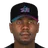
 Cliff Floyd MIA
Cliff Floyd MIA - 10
 Alex Rodriguez HOU
Alex Rodriguez HOU
RBI
- 42Barry Bonds NYY
- 36Cliff Floyd MIA
- 34Albert Pujols OAK
- 33

 Jose Mayobanex Fernandez DAL
Jose Mayobanex Fernandez DAL - 32Jose Canseco COL
- 32Alex Rodriguez HOU
- 30

 Shawn Green CHC
Shawn Green CHC - 30Sammy Sosa HOU
- 29Orlando Merced OAK
- 29Jason LaRue MIL
OPS
- 1.242Barry Bonds NYY
- 1.203Raul Ibanez STL
- 1.091Troy Glaus DET
- 1.066Albert Pujols OAK
- 1.010Jason LaRue MIL
- 1.004Alex Rodriguez HOU
- .976

 Jim Edmonds TOR
Jim Edmonds TOR - .961Cliff Floyd MIA
- .958
 Todd Helton CHC
Todd Helton CHC - .952Keith McDonald SEA
SB
- 15
 Carlos Beltran MIL
Carlos Beltran MIL - 13Carl Crawford MIA
- 11Mike Cameron PHI
- 9Julio Franco MIL
- 9
 Derek Jeter PHI
Derek Jeter PHI - 9
 Pokey Reese DAL
Pokey Reese DAL - 8
 Jimmy Rollins SFS
Jimmy Rollins SFS - 8
 Roberto Alomar PHI
Roberto Alomar PHI - 8
 Lew Ford DAL
Lew Ford DAL - 8
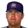
Corey Hart COL
ERA
- 2.16
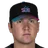
Cory Lidle MIA - 2.34
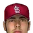
Horacio Ramirez STL - 2.45
 Chris Haney DAL
Chris Haney DAL - 2.48
 Greg Maddux NYY
Greg Maddux NYY - 2.48
 Mark Prior ATL
Mark Prior ATL - 2.49
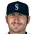
Jason Marquis SEA - 2.66
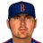
 Erik Hiljus BrGo
Erik Hiljus BrGo - 2.68Mike Smith BrGo
- 2.70
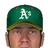
Tom Glavine OAK - 2.71
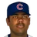
Odalis Perez CHC
W
- 6Greg Maddux NYY
- 6Cory Lidle MIA
- 6Runelvys Hernandez PHI
- 5Tom Glavine OAK
- 5
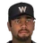
Johan Santana WCB - 5Horacio Ramirez STL
- 5
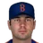
Ted Lilly BrGo - 5
 Bartolo Colon DET
Bartolo Colon DET - 5Horacio Estrada PHI
- 5Brett Laxton MIA
SV
- 12
 Mariano Rivera OAK
Mariano Rivera OAK - 9
 Jason Isringhausen BrGo
Jason Isringhausen BrGo - 9
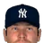
Mike DeJean NYY - 8
 Kazuhiro Sasaki MIA
Kazuhiro Sasaki MIA - 7
 Robb Nen SEA
Robb Nen SEA - 6John Bale MIL
- 6Eddie Guardado CHC
- 6Francisco Cordero STL
- 6
 Keith Foulke ATL
Keith Foulke ATL - 5
 Garrett Stephenson SFS
Garrett Stephenson SFS
K
- 81

 Randy Johnson BOS
Randy Johnson BOS - 80

 Pedro Martinez LAD
Pedro Martinez LAD - 73Johan Santana WCB
- 69Mark Prior ATL
- 65
 Tom Gordon ARI
Tom Gordon ARI - 63
 Jake Peavy SFS
Jake Peavy SFS - 56
 Robert Person ARI
Robert Person ARI - 55Wade Miller MIL
- 54Cory Lidle MIA
- 52Jason Marquis SEA
WHIP
- 0.89Cory Lidle MIA
- 0.92Mark Prior ATL
- 0.92Horacio Ramirez STL
- 0.95Odalis Perez CHC
- 0.99Greg Maddux NYY
- 0.99Jake Peavy SFS
- 1.03
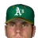
Jeff D'Amico OAK - 1.04Tom Gordon ARI
- 1.06Randy Johnson BOS
- 1.07Erik Hiljus BrGo
WAR (hitters)
- 3.2Barry Bonds NYY
- 2.9Raul Ibanez STL
- 2.4Jim Edmonds TOR
- 2.1Jose Offerman SEA
- 2.0Albert Pujols OAK
- 2.0Troy Glaus DET
- 1.9Orlando Merced OAK
- 1.9Alex Rodriguez HOU
- 1.9
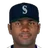
Miguel Tejada SEA - 1.8Jason LaRue MIL
FIP
- 2.12Tom Gordon ARI
- 2.17Mark Prior ATL
- 2.31Pedro Martinez LAD
- 2.52Bartolo Colon DET
- 2.61Jake Peavy SFS
- 2.65
 Dave Burba SFS
Dave Burba SFS - 2.83Randy Johnson BOS
- 2.92
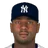
Chuck Smith NYY - 2.93
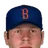
Kevin Millwood BrGo - 2.93Jason Marquis SEA
WAR (pitchers)
- 2.6Tom Gordon ARI
- 2.5Mark Prior ATL
- 2.5Pedro Martinez LAD
- 1.9Dave Burba SFS
- 1.9Randy Johnson BOS
- 1.8Kevin Millwood BrGo
- 1.8Bartolo Colon DET
- 1.8Odalis Perez CHC
- 1.7Jason Marquis SEA
- 1.7
 Freddy Garcia OAK
Freddy Garcia OAK
160 qualified, 147 more below the 3.1 PA/G line.
160 qualified, 147 more below the 3.1 PA/G line.
OPS+ = 100 × (OBP / league OBP + SLG / league SLG − 1); ERA+ = 100 × league ERA / ERA. Both use this league's 2002 totals and are not park-adjusted. FIP = (13 HR + 3 (BB + HBP) − 2 K) / IP + the league constant. WAR, WPA and UBR (baserunning runs) are OOTP's own figures.
77 qualified, 187 more below the 1 IP/G line.
77 qualified, 187 more below the 1 IP/G line.
OPS+ = 100 × (OBP / league OBP + SLG / league SLG − 1); ERA+ = 100 × league ERA / ERA. Both use this league's 2002 totals and are not park-adjusted. FIP = (13 HR + 3 (BB + HBP) − 2 K) / IP + the league constant. WAR, WPA and UBR (baserunning runs) are OOTP's own figures.
Team batting
| Team | G | PA | R | R/G | H | 2B | 3B | HR | BB | K | SB | CS | AVG | OBP | SLG | OPS | ISO | BB% | K% |
|---|---|---|---|---|---|---|---|---|---|---|---|---|---|---|---|---|---|---|---|
| Arizona Diamondbacks | 41 | 1579 | 174 | 4.24 | 354 | 75 | 2 | 43 | 148 | 281 | 13 | 10 | .253 | .328 | .401 | .729 | .149 | 9.4% | 17.8% |
| Atlanta Braves | 41 | 1604 | 172 | 4.20 | 372 | 60 | 5 | 56 | 116 | 313 | 21 | 16 | .256 | .316 | .420 | .736 | .164 | 7.2% | 19.5% |
| Boston Red Sox | 41 | 1590 | 164 | 4.00 | 361 | 85 | 3 | 40 | 126 | 261 | 16 | 9 | .252 | .319 | .400 | .719 | .148 | 7.9% | 16.4% |
| Brooklyn Gothams | 41 | 1627 | 194 | 4.73 | 379 | 81 | 5 | 48 | 123 | 265 | 24 | 13 | .260 | .319 | .421 | .740 | .161 | 7.6% | 16.3% |
| Chicago Cubs | 41 | 1644 | 183 | 4.46 | 377 | 79 | 7 | 34 | 164 | 230 | 25 | 16 | .263 | .343 | .398 | .741 | .136 | 10.0% | 14.0% |
| Colorado Rockies | 41 | 1559 | 205 | 5.00 | 352 | 80 | 9 | 64 | 133 | 279 | 44 | 10 | .252 | .322 | .460 | .782 | .208 | 8.5% | 17.9% |
| Dallas Griffins | 41 | 1520 | 142 | 3.46 | 317 | 56 | 11 | 25 | 123 | 254 | 31 | 14 | .235 | .304 | .348 | .652 | .113 | 8.1% | 16.7% |
| Detroit Wolverines | 41 | 1614 | 202 | 4.93 | 335 | 58 | 15 | 45 | 186 | 314 | 15 | 10 | .241 | .335 | .402 | .737 | .161 | 11.5% | 19.5% |
| Houston Astros | 41 | 1613 | 220 | 5.37 | 379 | 82 | 13 | 63 | 146 | 274 | 23 | 12 | .264 | .338 | .471 | .810 | .207 | 9.1% | 17.0% |
| Los Angeles Dodgers | 41 | 1526 | 153 | 3.73 | 326 | 83 | 8 | 38 | 109 | 303 | 24 | 9 | .236 | .299 | .391 | .690 | .154 | 7.1% | 19.9% |
| Miami Marlins | 41 | 1553 | 183 | 4.46 | 360 | 92 | 14 | 36 | 123 | 251 | 29 | 7 | .258 | .323 | .422 | .745 | .163 | 7.9% | 16.2% |
| Milwaukee Brewers | 41 | 1576 | 163 | 3.98 | 345 | 54 | 12 | 47 | 133 | 301 | 38 | 9 | .245 | .315 | .401 | .716 | .156 | 8.4% | 19.1% |
| New York Yankees | 41 | 1674 | 201 | 4.90 | 408 | 71 | 10 | 50 | 144 | 263 | 15 | 12 | .274 | .342 | .436 | .777 | .162 | 8.6% | 15.7% |
| Oakland Athletics | 41 | 1597 | 194 | 4.73 | 389 | 90 | 7 | 54 | 128 | 278 | 14 | 2 | .271 | .334 | .456 | .790 | .185 | 8.0% | 17.4% |
| Philadelphia Phillies | 41 | 1599 | 199 | 4.85 | 365 | 56 | 4 | 47 | 146 | 306 | 49 | 24 | .257 | .329 | .401 | .729 | .144 | 9.1% | 19.1% |
| San Francisco Seals | 41 | 1536 | 194 | 4.73 | 377 | 73 | 8 | 46 | 107 | 288 | 23 | 11 | .270 | .323 | .433 | .756 | .163 | 7.0% | 18.8% |
| Seattle Mariners | 41 | 1574 | 180 | 4.39 | 382 | 71 | 10 | 44 | 121 | 236 | 43 | 18 | .270 | .331 | .428 | .759 | .158 | 7.7% | 15.0% |
| St. Louis Cardinals | 41 | 1557 | 167 | 4.07 | 357 | 93 | 6 | 38 | 107 | 279 | 18 | 7 | .253 | .311 | .408 | .719 | .155 | 6.9% | 17.9% |
| Toronto Blue Jays | 41 | 1498 | 161 | 3.93 | 329 | 69 | 7 | 44 | 123 | 251 | 11 | 14 | .244 | .312 | .403 | .715 | .159 | 8.2% | 16.8% |
| Washington Cherry Blossoms | 41 | 1593 | 187 | 4.56 | 390 | 95 | 6 | 45 | 127 | 260 | 17 | 11 | .270 | .333 | .437 | .770 | .167 | 8.0% | 16.3% |
Team pitching
| Team | W | L | ERA | FIP | SP ERA | RP ERA | IP | H | R | ER | HR | BB | K | WHIP | K/9 | BB/9 | HR/9 | Opp AVG | BABIP | GB% | QS | SV | BS |
|---|---|---|---|---|---|---|---|---|---|---|---|---|---|---|---|---|---|---|---|---|---|---|---|
| Arizona Diamondbacks | 17 | 24 | 4.33 | 3.66 | 4.49 | 3.90 | 361.2 | 337 | 188 | 174 | 44 | 118 | 321 | 1.26 | 8.0 | 2.9 | 1.09 | .244 | .285 | 50.2% | 21 | 6 | 2 |
| Atlanta Braves | 14 | 27 | 5.01 | 4.55 | 4.55 | 5.80 | 372.0 | 405 | 221 | 207 | 57 | 142 | 278 | 1.47 | 6.7 | 3.4 | 1.38 | .277 | .306 | 50.8% | 18 | 8 | 3 |
| Boston Red Sox | 16 | 25 | 4.53 | 4.44 | 4.44 | 4.67 | 371.2 | 382 | 205 | 187 | 50 | 181 | 319 | 1.51 | 7.7 | 4.4 | 1.21 | .265 | .307 | 51.4% | 14 | 5 | 9 |
| Brooklyn Gothams | 23 | 18 | 3.81 | 4.20 | 3.48 | 4.41 | 378.0 | 359 | 179 | 160 | 43 | 145 | 249 | 1.33 | 5.9 | 3.5 | 1.02 | .251 | .274 | 51.6% | 18 | 13 | 9 |
| Chicago Cubs | 20 | 21 | 3.83 | 3.72 | 4.31 | 2.88 | 373.1 | 363 | 176 | 159 | 43 | 109 | 277 | 1.26 | 6.7 | 2.6 | 1.04 | .253 | .285 | 49.6% | 16 | 13 | 2 |
| Colorado Rockies | 20 | 21 | 4.14 | 4.55 | 4.25 | 3.95 | 365.1 | 383 | 186 | 168 | 54 | 129 | 228 | 1.40 | 5.6 | 3.2 | 1.33 | .267 | .283 | 46.3% | 15 | 9 | 3 |
| Dallas Griffins | 18 | 23 | 3.90 | 4.25 | 4.28 | 3.20 | 362.2 | 354 | 175 | 157 | 40 | 160 | 243 | 1.42 | 6.0 | 4.0 | 0.99 | .254 | .280 | 51.8% | 19 | 13 | 3 |
| Detroit Wolverines | 24 | 17 | 3.90 | 3.67 | 4.06 | 3.57 | 369.2 | 382 | 181 | 160 | 35 | 141 | 295 | 1.41 | 7.2 | 3.4 | 0.85 | .264 | .307 | 46.7% | 20 | 14 | 5 |
| Houston Astros | 22 | 19 | 4.22 | 4.40 | 4.61 | 3.40 | 375.1 | 352 | 191 | 176 | 56 | 111 | 242 | 1.23 | 5.8 | 2.7 | 1.34 | .248 | .262 | 50.4% | 19 | 9 | 1 |
| Los Angeles Dodgers | 17 | 24 | 4.59 | 4.21 | 4.42 | 4.97 | 364.2 | 396 | 206 | 186 | 55 | 119 | 288 | 1.41 | 7.1 | 2.9 | 1.36 | .274 | .306 | 54.1% | 16 | 7 | 2 |
| Miami Marlins | 25 | 16 | 3.79 | 3.69 | 4.07 | 3.19 | 368.0 | 341 | 165 | 155 | 42 | 117 | 291 | 1.24 | 7.1 | 2.9 | 1.03 | .244 | .278 | 47.4% | 25 | 16 | 5 |
| Milwaukee Brewers | 19 | 22 | 4.14 | 4.16 | 4.64 | 3.18 | 367.0 | 346 | 183 | 169 | 46 | 153 | 295 | 1.36 | 7.2 | 3.8 | 1.13 | .252 | .287 | 49.9% | 14 | 11 | 2 |
| New York Yankees | 22 | 19 | 3.96 | 3.74 | 3.92 | 4.05 | 379.2 | 370 | 184 | 167 | 40 | 113 | 264 | 1.27 | 6.3 | 2.7 | 0.95 | .254 | .284 | 54.6% | 25 | 13 | 5 |
| Oakland Athletics | 26 | 15 | 3.75 | 4.03 | 3.43 | 4.81 | 372.0 | 371 | 165 | 155 | 43 | 111 | 236 | 1.30 | 5.7 | 2.7 | 1.04 | .263 | .286 | 49.5% | 27 | 16 | 9 |
| Philadelphia Phillies | 20 | 21 | 4.26 | 4.12 | 4.77 | 3.31 | 376.0 | 378 | 189 | 178 | 50 | 133 | 288 | 1.36 | 6.9 | 3.2 | 1.20 | .264 | .295 | 50.2% | 19 | 4 | 7 |
| San Francisco Seals | 26 | 15 | 3.33 | 3.48 | 3.77 | 2.39 | 364.2 | 304 | 146 | 135 | 28 | 141 | 294 | 1.22 | 7.3 | 3.5 | 0.69 | .228 | .269 | 48.1% | 25 | 14 | 7 |
| Seattle Mariners | 23 | 18 | 3.76 | 4.16 | 3.70 | 3.90 | 370.2 | 362 | 162 | 155 | 47 | 141 | 291 | 1.36 | 7.1 | 3.4 | 1.14 | .256 | .290 | 49.7% | 23 | 11 | 3 |
| St. Louis Cardinals | 19 | 22 | 3.58 | 4.15 | 3.73 | 3.25 | 362.0 | 347 | 167 | 144 | 43 | 124 | 237 | 1.30 | 5.9 | 3.1 | 1.07 | .247 | .268 | 53.9% | 21 | 9 | 1 |
| Toronto Blue Jays | 19 | 22 | 3.91 | 4.01 | 4.29 | 2.94 | 361.0 | 352 | 174 | 157 | 43 | 123 | 253 | 1.32 | 6.3 | 3.1 | 1.07 | .256 | .282 | 51.0% | 23 | 11 | 3 |
| Washington Cherry Blossoms | 20 | 21 | 4.49 | 4.04 | 4.71 | 3.93 | 362.2 | 370 | 195 | 181 | 48 | 122 | 298 | 1.36 | 7.4 | 3.0 | 1.19 | .264 | .303 | 46.0% | 19 | 6 | 3 |
Team fielding
| Team | G | TC | PO | A | E | DP | FPct | SB att | CS | CS% | PB |
|---|---|---|---|---|---|---|---|---|---|---|---|
| Arizona Diamondbacks | 41 | 1487 | 1085 | 376 | 26 | 27 | .983 | 43 | 11 | 25.6% | 3 |
| Atlanta Braves | 41 | 1565 | 1116 | 423 | 26 | 40 | .983 | 51 | 14 | 27.5% | 4 |
| Boston Red Sox | 41 | 1559 | 1115 | 417 | 27 | 42 | .983 | 42 | 13 | 31.0% | 4 |
| Brooklyn Gothams | 41 | 1612 | 1134 | 456 | 22 | 48 | .986 | 36 | 10 | 27.8% | 4 |
| Chicago Cubs | 41 | 1552 | 1120 | 407 | 25 | 36 | .984 | 38 | 12 | 31.6% | 2 |
| Colorado Rockies | 41 | 1488 | 1096 | 371 | 21 | 33 | .986 | 32 | 8 | 25.0% | 4 |
| Dallas Griffins | 41 | 1537 | 1088 | 428 | 21 | 34 | .986 | 40 | 11 | 27.5% | 3 |
| Detroit Wolverines | 41 | 1509 | 1109 | 371 | 29 | 34 | .981 | 39 | 12 | 30.8% | 1 |
| Houston Astros | 41 | 1589 | 1126 | 440 | 23 | 39 | .986 | 28 | 12 | 42.9% | 7 |
| Los Angeles Dodgers | 41 | 1556 | 1094 | 426 | 36 | 35 | .977 | 34 | 13 | 38.2% | 3 |
| Miami Marlins | 41 | 1502 | 1104 | 378 | 20 | 22 | .987 | 47 | 17 | 36.2% | 2 |
| Milwaukee Brewers | 41 | 1527 | 1101 | 402 | 24 | 38 | .984 | 49 | 16 | 32.7% | 3 |
| New York Yankees | 41 | 1639 | 1139 | 474 | 26 | 45 | .984 | 36 | 10 | 27.8% | 3 |
| Oakland Athletics | 41 | 1557 | 1116 | 430 | 11 | 42 | .993 | 27 | 11 | 40.7% | 1 |
| Philadelphia Phillies | 41 | 1570 | 1128 | 423 | 19 | 43 | .988 | 31 | 11 | 35.5% | 2 |
| San Francisco Seals | 41 | 1497 | 1094 | 381 | 22 | 34 | .985 | 26 | 11 | 42.3% | 3 |
| Seattle Mariners | 41 | 1533 | 1112 | 401 | 20 | 32 | .987 | 37 | 17 | 45.9% | 1 |
| St. Louis Cardinals | 41 | 1546 | 1086 | 429 | 31 | 26 | .980 | 31 | 9 | 29.0% | 5 |
| Toronto Blue Jays | 41 | 1534 | 1083 | 425 | 26 | 34 | .983 | 27 | 6 | 22.2% | 3 |
| Washington Cherry Blossoms | 41 | 1481 | 1088 | 365 | 28 | 36 | .981 | 33 | 10 | 30.3% | 2 |
Team totals come from OOTP's team stat tables. FIP uses this league's 2002 constant (league FIP equals league ERA). SP/RP ERA split the staff into starters and bullpen. GB% is ground balls over ground plus fly balls as OOTP records them.
Fewest errors (qualified fielders)
- 0
 Roger Cedeno PHI
Roger Cedeno PHI - 0
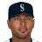
Alex Rios SEA - 0
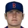
Ben Petrick BrGo - 0James Mouton DET
- 0Barry Wesson STL
- 0Sammy Sosa HOU
- 0
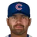
Johnny Damon CHC - 0Carlos Beltran MIL
Best fielding % (non-pitchers)
- 1.000Roger Cedeno PHI
- 1.000Alex Rios SEA
- 1.000Ben Petrick BrGo
- 1.000James Mouton DET
- 1.000Barry Wesson STL
- 1.000Sammy Sosa HOU
- 1.000Johnny Damon CHC
- 1.000Carlos Beltran MIL
Catcher caught-stealing %
- 52.6%
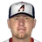
Vance Wilson HOU - 45.5%
 Ryan Doumit SFS
Ryan Doumit SFS - 42.9%Keith McDonald SEA
- 42.1%
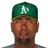
Ramon Castro OAK - 36.7%Jose Molina CHC
- 36.6%
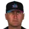
Brian Schneider MIA - 34.5%
 Carlos Delgado DET
Carlos Delgado DET - 33.3%Toby Hall BOS
Catcher framing runs
- 2.3
 Geronimo Gil ATL
Geronimo Gil ATL - 2.2
 Jason Varitek LAD
Jason Varitek LAD - 2.0Jose Molina CHC
- 1.6Yorvit Torrealba BrGo
- 1.5Brian Schneider MIA
- 1.5
 Javy Lopez DAL
Javy Lopez DAL - 1.2Ramon Castro OAK
- 1.2Toby Hall BOS
Outfield arm runs
- 6.8James Mouton DET
- 6.4
 Kory DeHaan LAD
Kory DeHaan LAD - 5.8Lew Ford DAL
- 4.5Alex Rios SEA
- 4.1
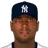
Fernando Seguignol NYY - 4.0Mark Budzinski DET
- 3.7Israel Alcantara BOS
- 3.6Jon Nunnally COL
Double plays, 2B/SS
- 37
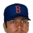
Alex Cora BrGo - 36Jack Wilson BrGo
- 31Derek Jeter PHI
- 30Roberto Alomar PHI
- 30
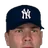
Mark Grudzielanek NYY - 30
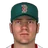
David Bell BOS - 28
 Marcus Giles MIL
Marcus Giles MIL - 28Shawon Dunston OAK
Zone rating, C
- 2.8Brian Schneider MIA
- 2.4Ramon Castro OAK
- 1.0Ryan Doumit SFS
- 0.9Carlos Delgado DET
- 0.9Keith McDonald SEA
- 0.7Toby Hall BOS
- 0.5Javy Lopez DAL
- 0.3Jason Varitek LAD
Zone rating, 1B
- 3.7Jose Offerman SEA
- 2.9Adam Hyzdu COL
- 2.4Julio Franco MIL
- 1.3
 Jason Giambi MIA
Jason Giambi MIA - 1.3Jose Mayobanex Fernandez DAL
- 1.0Travis Hafner WCB
- 0.6Todd Helton CHC
- -0.2
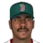
Fred McGriff BOS
Zone rating, 2B
- 9.5
 Benji Gil SFS
Benji Gil SFS - 7.3
 Tomas Perez LAD
Tomas Perez LAD - 5.6David Bell BOS
- 4.3Alex Cora BrGo
- 2.4Matt Stairs COL
- 2.4Marcus Giles MIL
- -0.2Russ Johnson TOR
- -0.7Roberto Alomar PHI
Zone rating, SS
- 6.2Jack Wilson BrGo
- 5.7Miguel Tejada SEA
- 5.5
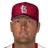
Shane Halter STL - 5.0
 Cristian Guzman MIA
Cristian Guzman MIA - 3.6
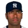
Jose Vizcaino NYY - 1.3Derek Jeter PHI
- 0.3
 Rich Aurilia BOS
Rich Aurilia BOS - -0.3Alex Rodriguez HOU
Zone rating, 3B
- 4.2Jeff Cirillo HOU
- 3.5Corey Koskie OAK
- 3.1Robin Ventura ARI
- 3.0Joe Crede PHI
- 2.9
 Tony Batista SFS
Tony Batista SFS - 1.8Shane Andrews CHC
- 1.6
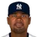
Lenny Harris NYY - 1.5
 Mike Mordecai DAL
Mike Mordecai DAL
Zone rating, LF
- 6.7Carl Crawford MIA
- 5.3
 Rondell White SFS
Rondell White SFS - 4.4Barry Bonds NYY
- 3.8Roger Cedeno PHI
- 2.6
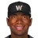
Endy Chavez WCB - 2.4Shane Spencer ARI
- 1.9Barry Wesson STL
- 1.9
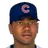
Melvin Mora CHC
Zone rating, CF
- 7.8Johnny Damon CHC
- 7.3Jim Edmonds TOR
- 6.6Mike Cameron PHI
- 1.2Carlos Beltran MIL
- 0.4
 Steve Finley ATL
Steve Finley ATL - 0.3Marvin Benard HOU
- -0.2Rocco Baldelli SEA
- -0.3Lew Ford DAL
Zone rating, RF
- 5.4Orlando Merced OAK
- 5.2
 Jacque Jones SFS
Jacque Jones SFS - 4.3Matt Lawton ARI
- 4.2Sammy Sosa HOU
- 3.9Alex Rios SEA
- 3.9Shawn Green CHC
- -0.6
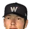
Adam Piatt WCB - -1.0Israel Alcantara BOS
| Player | Team | Pos | G | GS | Inn | TC | PO | A | E | DP | Fld% | RF/9 | ZR | Arm | Framing | SB | CS | CS% | PB |
|---|---|---|---|---|---|---|---|---|---|---|---|---|---|---|---|---|---|---|---|
| Juan Carlos Diaz | PHI | 1B | 39 | 39 | 350.0 | 371 | 341 | 24 | 6 | 40 | .984 | 9.39 | -1.5 | - | - | - | - | - | - |
| Derrek Lee | BrGo | 1B | 38 | 38 | 349.0 | 391 | 368 | 21 | 2 | 45 | .995 | 10.03 | -0.5 | - | - | - | - | - | - |
| Jack Wilson | BrGo | SS | 38 | 38 | 347.0 | 209 | 59 | 146 | 4 | 36 | .981 | 5.32 | 6.2 | - | - | - | - | - | - |
| Derek Jeter | PHI | SS | 38 | 37 | 346.0 | 191 | 59 | 131 | 1 | 31 | .995 | 4.94 | 1.3 | - | - | - | - | - | - |
| Esteban German | ATL | 2B | 40 | 38 | 344.0 | 184 | 74 | 109 | 1 | 25 | .995 | 4.79 | -1.1 | - | - | - | - | - | - |
| Torii Hunter | NYY | CF | 37 | 37 | 343.2 | 101 | 97 | 3 | 1 | 0 | .990 | 2.62 | -2.8 | -1.2 | - | - | - | - | - |
| Jose Mayobanex Fernandez | DAL | 1B | 39 | 39 | 343.2 | 392 | 372 | 19 | 1 | 32 | .997 | 10.24 | 1.3 | - | - | - | - | - | - |
| Roger Cedeno | PHI | LF | 38 | 38 | 343.0 | 74 | 72 | 2 | 0 | 0 | 1.000 | 1.94 | 3.8 | -0.1 | - | - | - | - | - |
| Alex Rios | SEA | RF | 38 | 38 | 342.2 | 93 | 92 | 1 | 0 | 0 | 1.000 | 2.44 | 3.9 | 4.5 | - | - | - | - | - |
| Troy Glaus | DET | 3B | 38 | 38 | 342.2 | 103 | 20 | 76 | 7 | 12 | .932 | 2.52 | -0.6 | - | - | - | - | - | - |
| Shawn Green | CHC | RF | 38 | 38 | 342.1 | 87 | 82 | 4 | 1 | 0 | .989 | 2.26 | 3.9 | 0.3 | - | - | - | - | - |
| Angel Echevarria | BrGo | RF | 37 | 37 | 341.0 | 91 | 82 | 4 | 5 | 0 | .945 | 2.27 | -3.4 | 1.3 | - | - | - | - | - |
| Jason Giambi | MIA | 1B | 38 | 38 | 340.0 | 345 | 317 | 27 | 1 | 20 | .997 | 9.11 | 1.3 | - | - | - | - | - | - |
| Mike Cameron | PHI | CF | 37 | 37 | 340.0 | 98 | 93 | 3 | 2 | 0 | .980 | 2.54 | 6.6 | -0.9 | - | - | - | - | - |
| Erubiel Durazo | ARI | 1B | 40 | 39 | 339.2 | 333 | 308 | 23 | 2 | 25 | .994 | 8.77 | -1.1 | - | - | - | - | - | - |
| Jimmy Rollins | SFS | SS | 40 | 38 | 339.2 | 169 | 64 | 104 | 1 | 27 | .994 | 4.45 | -1.0 | - | - | - | - | - | - |
| Ben Petrick | BrGo | CF | 37 | 37 | 339.0 | 102 | 101 | 1 | 0 | 0 | 1.000 | 2.71 | -3.4 | 3.4 | - | - | - | - | - |
| Miguel Tejada | SEA | SS | 38 | 38 | 339.0 | 188 | 65 | 120 | 3 | 24 | .984 | 4.91 | 5.7 | - | - | - | - | - | - |
| Manny Ramirez | MIL | LF | 38 | 38 | 339.0 | 63 | 59 | 2 | 2 | 0 | .968 | 1.62 | -4.8 | 0.7 | - | - | - | - | - |
| Marcus Giles | MIL | 2B | 39 | 38 | 339.0 | 187 | 81 | 102 | 4 | 28 | .979 | 4.86 | 2.4 | - | - | - | - | - | - |
| Roberto Alomar | PHI | 2B | 37 | 37 | 338.0 | 185 | 77 | 106 | 2 | 30 | .989 | 4.87 | -0.7 | - | - | - | - | - | - |
| Jon Nunnally | COL | RF | 39 | 38 | 337.1 | 93 | 91 | 0 | 2 | 0 | .978 | 2.43 | -1.7 | 3.6 | - | - | - | - | - |
| Fernando Tatis | BrGo | 3B | 37 | 37 | 337.0 | 86 | 26 | 59 | 1 | 4 | .988 | 2.27 | 1.0 | - | - | - | - | - | - |
| Alex Gonzalez | COL | SS | 38 | 38 | 337.0 | 182 | 70 | 105 | 7 | 20 | .962 | 4.67 | -1.8 | - | - | - | - | - | - |
| Jacque Jones | SFS | RF | 38 | 38 | 336.2 | 79 | 72 | 5 | 2 | 0 | .975 | 2.06 | 5.2 | 0.9 | - | - | - | - | - |
| Marty Malloy | SEA | 2B | 38 | 38 | 336.2 | 191 | 88 | 102 | 1 | 25 | .995 | 5.08 | -2.0 | - | - | - | - | - | - |
| Mark Grudzielanek | NYY | 2B | 37 | 37 | 336.1 | 201 | 80 | 112 | 9 | 30 | .955 | 5.14 | -5.3 | - | - | - | - | - | - |
| Omar Vizquel | CHC | SS | 37 | 37 | 336.1 | 178 | 56 | 120 | 2 | 23 | .989 | 4.71 | -1.0 | - | - | - | - | - | - |
| Fred McGriff | BOS | 1B | 38 | 38 | 336.0 | 340 | 316 | 23 | 1 | 36 | .997 | 9.08 | -0.2 | - | - | - | - | - | - |
| Marlon Anderson | WCB | 2B | 38 | 38 | 336.0 | 171 | 73 | 92 | 6 | 23 | .965 | 4.42 | -5.1 | - | - | - | - | - | - |
| Orlando Merced | OAK | RF | 37 | 37 | 335.0 | 84 | 78 | 5 | 1 | 0 | .988 | 2.23 | 5.4 | 1.8 | - | - | - | - | - |
| David Wright | SEA | 3B | 38 | 37 | 334.2 | 80 | 16 | 56 | 8 | 5 | .900 | 1.94 | -2.7 | - | - | - | - | - | - |
| Juan Gonzalez | LAD | RF | 38 | 38 | 334.2 | 64 | 63 | 0 | 1 | 0 | .984 | 1.69 | -2.5 | 0.3 | - | - | - | - | - |
| Shane Andrews | CHC | 3B | 38 | 38 | 334.1 | 102 | 29 | 70 | 3 | 4 | .971 | 2.67 | 1.8 | - | - | - | - | - | - |
| Lou Lucca | ATL | 3B | 39 | 38 | 334.0 | 94 | 24 | 65 | 5 | 3 | .947 | 2.40 | -0.2 | - | - | - | - | - | - |
| Todd Helton | CHC | 1B | 38 | 37 | 333.1 | 347 | 312 | 30 | 5 | 30 | .986 | 9.23 | 0.6 | - | - | - | - | - | - |
| Wil Cordero | TOR | SS | 39 | 38 | 333.0 | 184 | 63 | 116 | 5 | 18 | .973 | 4.84 | -3.7 | - | - | - | - | - | - |
| Wes Helms | MIA | 3B | 37 | 37 | 333.0 | 98 | 28 | 65 | 5 | 5 | .949 | 2.51 | -0.1 | - | - | - | - | - | - |
| Cristian Guzman | MIA | SS | 38 | 37 | 333.0 | 163 | 47 | 112 | 4 | 9 | .975 | 4.30 | 5.0 | - | - | - | - | - | - |
| James Mouton | DET | CF | 37 | 37 | 332.0 | 105 | 105 | 0 | 0 | 0 | 1.000 | 2.85 | -3.4 | 6.8 | - | - | - | - | - |
| Barry Wesson | STL | LF | 38 | 38 | 332.0 | 62 | 62 | 0 | 0 | 0 | 1.000 | 1.68 | 1.9 | 2.4 | - | - | - | - | - |
| Luis Matos | STL | CF | 38 | 38 | 331.0 | 102 | 100 | 1 | 1 | 0 | .990 | 2.75 | -1.1 | 3.2 | - | - | - | - | - |
| Russ Johnson | TOR | 2B | 38 | 38 | 331.0 | 193 | 85 | 107 | 1 | 24 | .995 | 5.22 | -0.2 | - | - | - | - | - | - |
| Pat Burrell | BOS | LF | 38 | 37 | 330.2 | 64 | 56 | 5 | 3 | 0 | .953 | 1.66 | -7.3 | 0.8 | - | - | - | - | - |
| Sammy Sosa | HOU | RF | 37 | 37 | 330.1 | 61 | 58 | 3 | 0 | 0 | 1.000 | 1.66 | 4.2 | -1.1 | - | - | - | - | - |
| Jason Bartlett | MIL | SS | 38 | 38 | 330.0 | 199 | 68 | 123 | 8 | 25 | .960 | 5.21 | -3.0 | - | - | - | - | - | - |
| Wilson Betemit | LAD | SS | 38 | 38 | 329.2 | 182 | 61 | 108 | 13 | 24 | .929 | 4.61 | -8.0 | - | - | - | - | - | - |
| Johnny Damon | CHC | CF | 37 | 37 | 329.1 | 106 | 101 | 5 | 0 | 0 | 1.000 | 2.90 | 7.8 | -0.9 | - | - | - | - | - |
| Carl Crawford | MIA | LF | 37 | 37 | 329.0 | 73 | 71 | 1 | 1 | 0 | .986 | 1.97 | 6.7 | -0.5 | - | - | - | - | - |
| Carlos Beltran | MIL | CF | 38 | 37 | 329.0 | 98 | 92 | 6 | 0 | 0 | 1.000 | 2.68 | 1.2 | 0.5 | - | - | - | - | - |
| Jim Edmonds | TOR | CF | 39 | 37 | 329.0 | 123 | 112 | 9 | 2 | 0 | .984 | 3.31 | 7.3 | 1.5 | - | - | - | - | - |
| Travis Hafner | WCB | 1B | 38 | 37 | 328.2 | 302 | 278 | 23 | 1 | 32 | .997 | 8.24 | 1.0 | - | - | - | - | - | - |
| Benji Gil | SFS | 2B | 37 | 37 | 328.2 | 175 | 55 | 116 | 4 | 21 | .977 | 4.68 | 9.5 | - | - | - | - | - | - |
| Joe Crede | PHI | 3B | 38 | 38 | 328.1 | 90 | 24 | 63 | 3 | 8 | .967 | 2.38 | 3.0 | - | - | - | - | - | - |
| Kit Pellow | LAD | 3B | 38 | 38 | 327.2 | 103 | 23 | 74 | 6 | 6 | .942 | 2.66 | -1.0 | - | - | - | - | - | - |
| Rocco Baldelli | SEA | CF | 37 | 37 | 327.2 | 108 | 98 | 9 | 1 | 2 | .991 | 2.94 | -0.2 | 1.9 | - | - | - | - | - |
| Robin Ventura | ARI | 3B | 37 | 37 | 326.2 | 108 | 25 | 77 | 6 | 6 | .944 | 2.81 | 3.1 | - | - | - | - | - | - |
| David Segui | LAD | 1B | 38 | 37 | 326.0 | 353 | 329 | 22 | 2 | 27 | .994 | 9.69 | -1.1 | - | - | - | - | - | - |
| Jeff Cirillo | HOU | 3B | 37 | 37 | 325.1 | 98 | 22 | 74 | 2 | 8 | .980 | 2.66 | 4.2 | - | - | - | - | - | - |
| Marvin Benard | HOU | CF | 38 | 37 | 325.1 | 119 | 116 | 3 | 0 | 0 | 1.000 | 3.29 | 0.3 | 0.5 | - | - | - | - | - |
| Barry Bonds | NYY | LF | 36 | 36 | 325.1 | 66 | 64 | 2 | 0 | 0 | 1.000 | 1.83 | 4.4 | -0.3 | - | - | - | - | - |
| Jeff Kent | HOU | 2B | 36 | 36 | 325.1 | 204 | 87 | 114 | 3 | 27 | .985 | 5.56 | -2.0 | - | - | - | - | - | - |
| Kory DeHaan | LAD | CF | 38 | 38 | 325.0 | 81 | 79 | 1 | 1 | 0 | .988 | 2.22 | -2.8 | 6.4 | - | - | - | - | - |
| Jermaine Dye | STL | RF | 38 | 38 | 324.2 | 65 | 63 | 2 | 0 | 1 | 1.000 | 1.80 | -2.1 | 0.1 | - | - | - | - | - |
| Lew Ford | DAL | CF | 38 | 37 | 324.2 | 112 | 112 | 0 | 0 | 0 | 1.000 | 3.10 | -0.3 | 5.8 | - | - | - | - | - |
| Corey Hart | COL | 3B | 38 | 38 | 322.0 | 92 | 20 | 69 | 3 | 8 | .967 | 2.49 | -1.1 | - | - | - | - | - | - |
| Cliff Floyd | MIA | RF | 36 | 36 | 322.0 | 78 | 74 | 2 | 2 | 0 | .974 | 2.12 | -1.6 | -0.6 | - | - | - | - | - |
| Greg LaRocca | BOS | 3B | 38 | 38 | 321.1 | 71 | 14 | 50 | 7 | 6 | .901 | 1.79 | -2.4 | - | - | - | - | - | - |
| Miguel Cairo | CHC | 2B | 36 | 35 | 319.1 | 163 | 72 | 88 | 3 | 21 | .982 | 4.51 | -2.5 | - | - | - | - | - | - |
| Mark Kotsay | WCB | CF | 37 | 36 | 319.1 | 114 | 103 | 9 | 2 | 1 | .982 | 3.16 | -1.6 | 1.4 | - | - | - | - | - |
| Steve Finley | ATL | CF | 36 | 36 | 319.0 | 98 | 94 | 2 | 2 | 0 | .980 | 2.71 | 0.4 | -1.9 | - | - | - | - | - |
| Lee Stevens | MIA | CF | 36 | 36 | 319.0 | 113 | 107 | 4 | 2 | 0 | .982 | 3.13 | -2.4 | 1.3 | - | - | - | - | - |
| Rondell White | SFS | LF | 36 | 36 | 317.2 | 70 | 70 | 0 | 0 | 0 | 1.000 | 1.98 | 5.3 | -0.5 | - | - | - | - | - |
| Lenny Harris | NYY | 3B | 36 | 36 | 316.1 | 104 | 20 | 78 | 6 | 11 | .942 | 2.79 | 1.6 | - | - | - | - | - | - |
| Hideki Matsui | ATL | LF | 35 | 35 | 316.0 | 54 | 50 | 4 | 0 | 0 | 1.000 | 1.54 | -1.2 | 0.2 | - | - | - | - | - |
| Shawon Dunston | OAK | SS | 36 | 36 | 315.2 | 170 | 58 | 110 | 2 | 28 | .988 | 4.79 | -3.3 | - | - | - | - | - | - |
| Mo Vaughn | ATL | 1B | 38 | 38 | 315.0 | 332 | 304 | 22 | 6 | 35 | .982 | 9.31 | -3.4 | - | - | - | - | - | - |
| Jose Offerman | SEA | 1B | 35 | 35 | 313.2 | 315 | 282 | 31 | 2 | 24 | .994 | 8.98 | 3.7 | - | - | - | - | - | - |
| Tony Batista | SFS | 3B | 36 | 35 | 310.2 | 64 | 11 | 53 | 0 | 6 | 1.000 | 1.85 | 2.9 | - | - | - | - | - | - |
| Tomas Perez | LAD | 2B | 35 | 35 | 310.2 | 204 | 74 | 125 | 5 | 28 | .975 | 5.77 | 7.3 | - | - | - | - | - | - |
| Mark Budzinski | DET | RF | 34 | 34 | 309.0 | 59 | 58 | 1 | 0 | 0 | 1.000 | 1.72 | -2.4 | 4.0 | - | - | - | - | - |
| Fernando Seguignol | NYY | RF | 36 | 34 | 308.1 | 59 | 58 | 1 | 0 | 1 | 1.000 | 1.72 | -3.5 | 4.1 | - | - | - | - | - |
| Kevin Nicholson | ATL | SS | 36 | 34 | 307.0 | 195 | 75 | 115 | 5 | 26 | .974 | 5.57 | -3.3 | - | - | - | - | - | - |
| Adam Piatt | WCB | RF | 35 | 35 | 305.0 | 69 | 63 | 4 | 2 | 0 | .971 | 1.98 | -0.6 | 1.8 | - | - | - | - | - |
| Alex Cora | BrGo | 2B | 35 | 34 | 305.0 | 202 | 76 | 122 | 4 | 37 | .980 | 5.84 | 4.3 | - | - | - | - | - | - |
| David Bell | BOS | 2B | 35 | 35 | 305.0 | 181 | 69 | 109 | 3 | 30 | .983 | 5.25 | 5.6 | - | - | - | - | - | - |
| Coco Crisp | SEA | LF | 34 | 34 | 304.2 | 42 | 42 | 0 | 0 | 0 | 1.000 | 1.24 | -0.7 | 2.1 | - | - | - | - | - |
| Mike Mordecai | DAL | 3B | 36 | 35 | 303.2 | 101 | 22 | 75 | 4 | 6 | .960 | 2.87 | 1.5 | - | - | - | - | - | - |
| Matt Stairs | COL | 2B | 35 | 34 | 301.1 | 162 | 70 | 89 | 3 | 20 | .981 | 4.75 | 2.4 | - | - | - | - | - | - |
| Brian Giles | OAK | CF | 33 | 33 | 301.0 | 103 | 99 | 3 | 1 | 0 | .990 | 3.05 | -2.7 | -1.1 | - | - | - | - | - |
| Bengie Molina | NYY | C | 33 | 33 | 299.2 | 216 | 198 | 17 | 1 | 0 | .995 | 6.46 | 0.3 | - | -0.3 | 17 | 5 | 22.7 | 2 |
| Alex Rodriguez | HOU | SS | 34 | 32 | 299.1 | 184 | 68 | 110 | 6 | 20 | .967 | 5.35 | -0.3 | - | - | - | - | - | - |
| Israel Alcantara | BOS | RF | 34 | 34 | 297.2 | 66 | 65 | 0 | 1 | 0 | .985 | 1.97 | -1.0 | 3.7 | - | - | - | - | - |
| Brian Schneider | MIA | C | 33 | 33 | 297.0 | 276 | 243 | 33 | 0 | 1 | 1.000 | 8.36 | 2.8 | - | 1.5 | 26 | 15 | 36.6 | 1 |
| Ramon Castro | OAK | C | 33 | 33 | 294.2 | 213 | 189 | 24 | 0 | 1 | 1.000 | 6.51 | 2.4 | - | 1.2 | 11 | 8 | 42.1 | 1 |
| Vance Wilson | HOU | C | 33 | 33 | 294.1 | 213 | 194 | 17 | 2 | 2 | .991 | 6.45 | -0.1 | - | 0.7 | 9 | 10 | 52.6 | 5 |
| Ryan Doumit | SFS | C | 33 | 33 | 293.2 | 257 | 234 | 18 | 5 | 0 | .981 | 7.72 | 1.0 | - | -1.5 | 12 | 10 | 45.5 | 2 |
| Jason LaRue | MIL | C | 33 | 33 | 293.0 | 276 | 251 | 21 | 4 | 0 | .986 | 8.35 | -1.1 | - | 0.8 | 29 | 10 | 25.6 | 3 |
| Jose Molina | CHC | C | 33 | 33 | 293.0 | 235 | 214 | 18 | 3 | 5 | .987 | 7.13 | -0.6 | - | 2.0 | 19 | 11 | 36.7 | 2 |
| Shane Spencer | ARI | LF | 33 | 33 | 292.1 | 62 | 60 | 1 | 1 | 0 | .984 | 1.88 | 2.4 | -0.8 | - | - | - | - | - |
| Rich Aurilia | BOS | SS | 34 | 33 | 290.2 | 171 | 54 | 112 | 5 | 26 | .971 | 5.14 | 0.3 | - | - | - | - | - | - |
| Adam Hyzdu | COL | 1B | 34 | 34 | 290.0 | 302 | 279 | 21 | 2 | 21 | .993 | 9.31 | 2.9 | - | - | - | - | - | - |
| Eli Marrero | TOR | C | 33 | 33 | 290.0 | 240 | 218 | 20 | 2 | 1 | .992 | 7.39 | 0.2 | - | 0.7 | 14 | 4 | 22.2 | 3 |
| Toby Hall | BOS | C | 33 | 33 | 289.0 | 279 | 253 | 25 | 1 | 3 | .996 | 8.66 | 0.7 | - | 1.2 | 24 | 12 | 33.3 | 4 |
| Jason Varitek | LAD | C | 33 | 33 | 288.2 | 256 | 240 | 15 | 1 | 1 | .996 | 7.95 | 0.3 | - | 2.2 | 18 | 7 | 28.0 | 2 |
| Keith McDonald | SEA | C | 33 | 32 | 287.2 | 262 | 238 | 20 | 4 | 0 | .985 | 8.07 | 0.9 | - | -1.8 | 16 | 12 | 42.9 | 1 |
| Moises Alou | BrGo | LF | 32 | 32 | 287.0 | 49 | 49 | 0 | 0 | 0 | 1.000 | 1.54 | -0.7 | -0.2 | - | - | - | - | - |
| Carlos Delgado | DET | C | 33 | 32 | 287.0 | 255 | 240 | 15 | 0 | 0 | 1.000 | 8.00 | 0.9 | - | -0.3 | 19 | 10 | 34.5 | 1 |
| Tony Clark | HOU | 1B | 33 | 32 | 286.1 | 314 | 293 | 19 | 2 | 26 | .994 | 9.81 | -1.3 | - | - | - | - | - | - |
| Julio Franco | MIL | 1B | 33 | 32 | 286.0 | 292 | 268 | 23 | 1 | 28 | .997 | 9.16 | 2.4 | - | - | - | - | - | - |
| Emil Brown | DAL | RF | 33 | 32 | 285.2 | 72 | 70 | 2 | 0 | 0 | 1.000 | 2.27 | -3.7 | 3.4 | - | - | - | - | - |
| Jose Vizcaino | NYY | SS | 32 | 32 | 285.1 | 175 | 48 | 124 | 3 | 20 | .983 | 5.43 | 3.6 | - | - | - | - | - | - |
| Brian Lesher | DAL | LF | 33 | 33 | 285.0 | 46 | 43 | 1 | 2 | 0 | .957 | 1.39 | -2.1 | 3.1 | - | - | - | - | - |
| Raul Ibanez | STL | C | 32 | 32 | 284.0 | 214 | 192 | 21 | 1 | 2 | .995 | 6.75 | -0.1 | - | 0.1 | 16 | 8 | 33.3 | 4 |
| Geronimo Gil | ATL | C | 32 | 32 | 284.0 | 238 | 215 | 20 | 3 | 1 | .987 | 7.45 | -0.5 | - | 2.3 | 27 | 11 | 28.9 | 4 |
| Andres Galarraga | SFS | 1B | 32 | 32 | 283.2 | 291 | 271 | 17 | 3 | 23 | .990 | 9.14 | -2.0 | - | - | - | - | - | - |
| Todd Hundley | ARI | C | 32 | 32 | 281.2 | 268 | 252 | 15 | 1 | 0 | .996 | 8.53 | -1.0 | - | 0.0 | 29 | 8 | 21.6 | 3 |
| Damian Miller | WCB | C | 33 | 32 | 281.2 | 257 | 238 | 18 | 1 | 3 | .996 | 8.18 | 0.2 | - | -0.1 | 22 | 8 | 26.7 | 2 |
| Yorvit Torrealba | BrGo | C | 31 | 30 | 281.0 | 215 | 195 | 20 | 0 | 0 | 1.000 | 6.89 | -0.5 | - | 1.6 | 23 | 6 | 20.7 | 4 |
| Endy Chavez | WCB | LF | 32 | 32 | 279.0 | 74 | 64 | 5 | 5 | 1 | .932 | 2.23 | 2.6 | 0.0 | - | - | - | - | - |
| Brad Ausmus | COL | C | 32 | 32 | 277.2 | 190 | 176 | 12 | 2 | 2 | .989 | 6.09 | -0.8 | - | 0.9 | 18 | 4 | 18.2 | 2 |
| Ken Harvey | STL | 1B | 31 | 31 | 273.0 | 328 | 300 | 24 | 4 | 17 | .988 | 10.68 | -0.3 | - | - | - | - | - | - |
| Darren Bragg | LAD | LF | 32 | 32 | 272.0 | 54 | 48 | 4 | 2 | 0 | .963 | 1.72 | 0.7 | 1.5 | - | - | - | - | - |
| Tim Raines | DET | LF | 30 | 30 | 270.2 | 61 | 60 | 1 | 0 | 0 | 1.000 | 2.03 | -5.3 | -0.3 | - | - | - | - | - |
| Rob Mackowiak | MIL | RF | 31 | 31 | 270.0 | 59 | 55 | 3 | 1 | 0 | .983 | 1.93 | -1.3 | 0.3 | - | - | - | - | - |
| Javy Lopez | DAL | C | 30 | 30 | 265.2 | 194 | 172 | 19 | 3 | 0 | .985 | 6.47 | 0.5 | - | 1.5 | 21 | 10 | 32.3 | 3 |
| Matt Lawton | ARI | RF | 30 | 30 | 261.1 | 61 | 57 | 3 | 1 | 0 | .984 | 2.07 | 4.3 | -0.3 | - | - | - | - | - |
| Albert Pujols | OAK | LF | 30 | 30 | 259.0 | 57 | 57 | 0 | 0 | 0 | 1.000 | 1.98 | -4.2 | 1.7 | - | - | - | - | - |
| Shane Halter | STL | SS | 30 | 29 | 258.0 | 152 | 57 | 91 | 4 | 10 | .974 | 5.16 | 5.5 | - | - | - | - | - | - |
| Chan Perry | NYY | 1B | 30 | 30 | 258.0 | 296 | 279 | 15 | 2 | 31 | .993 | 10.26 | -0.3 | - | - | - | - | - | - |
| Pat Borders | STL | 3B | 32 | 29 | 258.0 | 92 | 19 | 69 | 4 | 7 | .957 | 3.07 | -0.4 | - | - | - | - | - | - |
| Corey Koskie | OAK | 3B | 29 | 29 | 257.2 | 65 | 12 | 53 | 0 | 7 | 1.000 | 2.27 | 3.5 | - | - | - | - | - | - |
| Pedro Valdes | BOS | CF | 30 | 30 | 257.0 | 77 | 76 | 0 | 1 | 0 | .987 | 2.66 | -3.5 | 2.1 | - | - | - | - | - |
| Ron Gant | HOU | LF | 29 | 29 | 253.1 | 43 | 41 | 2 | 0 | 0 | 1.000 | 1.53 | -0.7 | 0.2 | - | - | - | - | - |
| Felipe Lopez | DET | SS | 29 | 29 | 253.1 | 126 | 37 | 82 | 7 | 10 | .944 | 4.23 | -5.6 | - | - | - | - | - | - |
| Jay Woolf | ARI | SS | 29 | 28 | 249.2 | 119 | 36 | 80 | 3 | 17 | .975 | 4.18 | -1.8 | - | - | - | - | - | - |
| Tyler Houston | MIL | 3B | 30 | 28 | 248.0 | 55 | 18 | 34 | 3 | 6 | .945 | 1.89 | -1.4 | - | - | - | - | - | - |
| Melvin Mora | CHC | LF | 28 | 28 | 246.1 | 45 | 45 | 0 | 0 | 0 | 1.000 | 1.64 | 1.9 | -0.5 | - | - | - | - | - |
| Edgar Renteria | WCB | SS | 28 | 28 | 244.2 | 109 | 41 | 67 | 1 | 18 | .991 | 3.97 | -1.7 | - | - | - | - | - | - |
| Terry Shumpert | DET | 2B | 28 | 27 | 239.1 | 140 | 74 | 62 | 4 | 18 | .971 | 5.11 | -3.6 | - | - | - | - | - | - |
| Mike Gulan | TOR | 3B | 26 | 26 | 232.0 | 68 | 15 | 49 | 4 | 6 | .941 | 2.48 | -1.9 | - | - | - | - | - | - |
| Ernie Young | ATL | RF | 28 | 26 | 232.0 | 43 | 42 | 1 | 0 | 0 | 1.000 | 1.67 | -1.3 | 1.3 | - | - | - | - | - |
| Dmitri Young | TOR | 1B | 25 | 25 | 218.0 | 239 | 213 | 25 | 1 | 21 | .996 | 9.83 | 1.5 | - | - | - | - | - | - |
| Daryle Ward | TOR | LF | 25 | 25 | 214.0 | 34 | 33 | 0 | 1 | 0 | .971 | 1.39 | -2.3 | -1.0 | - | - | - | - | - |
| Gene Schall | OAK | 1B | 26 | 24 | 208.0 | 225 | 212 | 12 | 1 | 23 | .996 | 9.69 | -0.3 | - | - | - | - | - | - |
| Andres Torres | SFS | CF | 24 | 23 | 203.2 | 73 | 72 | 0 | 1 | 0 | .986 | 3.18 | 1.0 | 3.1 | - | - | - | - | - |
| Enrique Wilson | ARI | 2B | 23 | 23 | 202.2 | 112 | 50 | 58 | 4 | 15 | .964 | 4.80 | -1.2 | - | - | - | - | - | - |
| Brady Clark | COL | CF | 22 | 21 | 189.0 | 75 | 71 | 3 | 1 | 0 | .987 | 3.52 | 2.9 | -0.4 | - | - | - | - | - |
| Carlos Febles | MIA | 2B | 22 | 22 | 188.1 | 95 | 42 | 50 | 3 | 11 | .968 | 4.40 | -1.1 | - | - | - | - | - | - |
| Denny Hocking | OAK | 2B | 21 | 21 | 187.0 | 107 | 39 | 67 | 1 | 20 | .991 | 5.10 | -0.1 | - | - | - | - | - | - |
| Pokey Reese | DAL | 2B | 22 | 21 | 185.2 | 117 | 48 | 69 | 0 | 14 | 1.000 | 5.67 | 5.7 | - | - | - | - | - | - |
| Jose Hernandez | WCB | 3B | 21 | 21 | 184.0 | 62 | 19 | 40 | 3 | 1 | .952 | 2.89 | 1.6 | - | - | - | - | - | - |
| Ruben Mateo | TOR | RF | 22 | 22 | 184.0 | 49 | 46 | 1 | 2 | 0 | .959 | 2.30 | 1.6 | 1.6 | - | - | - | - | - |
| Todd Sears | DET | 1B | 21 | 21 | 180.1 | 179 | 166 | 11 | 2 | 15 | .989 | 8.83 | -0.1 | - | - | - | - | - | - |
| Jonny Gomes | COL | LF | 22 | 22 | 180.0 | 33 | 33 | 0 | 0 | 0 | 1.000 | 1.65 | -1.6 | 2.1 | - | - | - | - | - |
| Adam Everett | DAL | SS | 21 | 21 | 180.0 | 87 | 28 | 55 | 4 | 10 | .954 | 4.15 | 1.8 | - | - | - | - | - | - |
| Brad Hawpe | DET | 1B | 20 | 20 | 178.2 | 158 | 146 | 10 | 2 | 19 | .987 | 7.86 | -0.2 | - | - | - | - | - | - |
| Midre Cummings | PHI | RF | 20 | 20 | 177.0 | 40 | 40 | 0 | 0 | 0 | 1.000 | 2.03 | -1.4 | 2.2 | - | - | - | - | - |
| Raul Gonzalez | ARI | CF | 19 | 19 | 169.0 | 50 | 50 | 0 | 0 | 0 | 1.000 | 2.66 | 0.0 | 1.7 | - | - | - | - | - |
| Ricky Gutierrez | DAL | 2B | 19 | 19 | 169.0 | 94 | 40 | 51 | 3 | 17 | .968 | 4.85 | -1.8 | - | - | - | - | - | - |
| Chris Stynes | ARI | CF | 19 | 19 | 166.1 | 45 | 44 | 1 | 0 | 0 | 1.000 | 2.43 | -0.7 | 0.4 | - | - | - | - | - |
| Damion Easley | WCB | 3B | 18 | 18 | 160.0 | 38 | 11 | 26 | 1 | 3 | .974 | 2.08 | -0.7 | - | - | - | - | - | - |
| Ben Davis | PHI | C | 19 | 18 | 154.0 | 129 | 117 | 12 | 0 | 1 | 1.000 | 7.54 | 0.9 | - | 3.0 | 7 | 4 | 36.4 | 0 |
| Brady Clark | COL | LF | 17 | 17 | 151.1 | 34 | 32 | 2 | 0 | 0 | 1.000 | 2.02 | 1.8 | 0.2 | - | - | - | - | - |
| Tony Alvarez | COL | CF | 17 | 17 | 150.1 | 54 | 54 | 0 | 0 | 0 | 1.000 | 3.23 | 1.6 | 1.2 | - | - | - | - | - |
| Dennis Anderson | PHI | C | 16 | 16 | 149.0 | 134 | 121 | 11 | 2 | 0 | .985 | 7.97 | -1.1 | - | 0.7 | 8 | 3 | 27.3 | 2 |
| Pokey Reese | DAL | SS | 17 | 17 | 146.1 | 89 | 22 | 65 | 2 | 15 | .978 | 5.35 | 3.0 | - | - | - | - | - | - |
| Sergio Palafox | STL | 2B | 16 | 16 | 142.0 | 91 | 46 | 44 | 1 | 9 | .989 | 5.70 | -0.9 | - | - | - | - | - | - |
| Adrian Brown | SFS | CF | 16 | 16 | 141.0 | 53 | 47 | 3 | 3 | 0 | .943 | 3.19 | 0.3 | 0.1 | - | - | - | - | - |
| Trenidad Hubbard | PHI | RF | 20 | 15 | 137.0 | 38 | 34 | 2 | 2 | 0 | .947 | 2.36 | 1.2 | 0.3 | - | - | - | - | - |
| Bill Hall | MIA | 2B | 15 | 15 | 136.0 | 52 | 26 | 25 | 1 | 5 | .981 | 3.38 | -1.6 | - | - | - | - | - | - |
| Preston Wilson | TOR | 3B | 16 | 15 | 129.0 | 39 | 8 | 26 | 5 | 4 | .872 | 2.37 | -2.2 | - | - | - | - | - | - |
| Steve Cox | TOR | 1B | 14 | 14 | 122.0 | 124 | 112 | 11 | 1 | 10 | .992 | 9.07 | -0.3 | - | - | - | - | - | - |
| Craig Paquette | MIL | 3B | 14 | 13 | 118.0 | 28 | 4 | 23 | 1 | 0 | .964 | 2.06 | 0.0 | - | - | - | - | - | - |
| Jose Hernandez | WCB | SS | 13 | 13 | 112.2 | 62 | 27 | 33 | 2 | 9 | .968 | 4.79 | 0.6 | - | - | - | - | - | - |
| Enrique Wilson | ARI | SS | 13 | 13 | 112.0 | 43 | 12 | 31 | 0 | 4 | 1.000 | 3.46 | -0.8 | - | - | - | - | - | - |
| Denny Hocking | OAK | 3B | 12 | 12 | 109.1 | 41 | 8 | 33 | 0 | 3 | 1.000 | 3.38 | 2.9 | - | - | - | - | - | - |
| Chris Stynes | ARI | 2B | 12 | 12 | 105.0 | 52 | 22 | 27 | 3 | 6 | .942 | 4.20 | -1.4 | - | - | - | - | - | - |
| Roberto Valle | DET | SS | 14 | 12 | 103.0 | 61 | 21 | 39 | 1 | 6 | .984 | 5.24 | -0.5 | - | - | - | - | - | - |
| Preston Wilson | TOR | LF | 12 | 12 | 102.0 | 20 | 19 | 0 | 1 | 0 | .950 | 1.68 | 0.3 | -0.3 | - | - | - | - | - |
| Sandy Alomar Jr. | DAL | C | 12 | 11 | 97.0 | 79 | 74 | 5 | 0 | 1 | 1.000 | 7.33 | -0.0 | - | 0.5 | 6 | 1 | 14.3 | 0 |
| Brant Brown | CHC | LF | 12 | 10 | 97.0 | 21 | 20 | 0 | 1 | 0 | .952 | 1.86 | -0.0 | 1.0 | - | - | - | - | - |
| Chone Figgins | BOS | CF | 16 | 9 | 95.2 | 29 | 28 | 1 | 0 | 0 | 1.000 | 2.73 | -1.4 | 0.9 | - | - | - | - | - |
| Juan Encarnacion | HOU | LF | 10 | 10 | 94.0 | 15 | 15 | 0 | 0 | 0 | 1.000 | 1.44 | -0.3 | -0.3 | - | - | - | - | - |
| Ben Candelaria | LAD | LF | 15 | 9 | 92.2 | 18 | 17 | 0 | 1 | 0 | .944 | 1.65 | -0.2 | 1.0 | - | - | - | - | - |
| Roberto Kelly | DET | LF | 10 | 10 | 90.0 | 17 | 17 | 0 | 0 | 0 | 1.000 | 1.70 | -1.8 | 0.7 | - | - | - | - | - |
| Carlos Ruiz | ATL | C | 10 | 9 | 88.0 | 83 | 76 | 7 | 0 | 0 | 1.000 | 8.49 | -0.0 | - | -0.7 | 10 | 3 | 23.1 | 0 |
| Todd Dunwoody | MIL | RF | 9 | 9 | 85.0 | 20 | 19 | 1 | 0 | 0 | 1.000 | 2.12 | -0.8 | 1.3 | - | - | - | - | - |
| Roosevelt Brown | OAK | LF | 17 | 8 | 84.0 | 14 | 13 | 1 | 0 | 0 | 1.000 | 1.50 | -0.5 | 0.1 | - | - | - | - | - |
| Javier Valentin | BOS | C | 9 | 8 | 82.2 | 84 | 78 | 5 | 1 | 0 | .988 | 9.04 | 0.2 | - | -1.5 | 3 | 0 | 0.0 | 0 |
| B.J. Waszgis | DET | C | 9 | 9 | 82.2 | 72 | 67 | 4 | 1 | 1 | .986 | 7.73 | 0.2 | - | 0.0 | 6 | 2 | 25.0 | 0 |
| Adam Kennedy | NYY | SS | 8 | 8 | 82.1 | 55 | 25 | 29 | 1 | 9 | .982 | 5.90 | -0.3 | - | - | - | - | - | - |
| Felipe Lopez | DET | 2B | 10 | 9 | 82.1 | 52 | 17 | 34 | 1 | 7 | .981 | 5.57 | 0.0 | - | - | - | - | - | - |
| Alberto Castillo | WCB | C | 9 | 9 | 81.0 | 80 | 75 | 5 | 0 | 1 | 1.000 | 8.89 | 0.5 | - | 0.1 | 1 | 2 | 66.7 | 0 |
| Shawn Wooten | HOU | 1B | 10 | 9 | 81.0 | 93 | 86 | 6 | 1 | 9 | .989 | 10.22 | -0.1 | - | - | - | - | - | - |
| Tom Prince | ARI | C | 9 | 9 | 80.0 | 83 | 75 | 8 | 0 | 0 | 1.000 | 9.34 | 0.9 | - | 0.4 | 2 | 3 | 60.0 | 0 |
| Steve Torrealba | NYY | C | 10 | 8 | 80.0 | 74 | 67 | 7 | 0 | 0 | 1.000 | 8.32 | 0.1 | - | -0.5 | 9 | 5 | 35.7 | 1 |
| Tom Evans | OAK | 1B | 12 | 10 | 79.2 | 97 | 94 | 3 | 0 | 8 | 1.000 | 10.96 | 0.6 | - | - | - | - | - | - |
| Koyie Hill | BrGo | C | 8 | 8 | 78.0 | 53 | 48 | 5 | 0 | 1 | 1.000 | 6.12 | 1.0 | - | 0.0 | 1 | 3 | 75.0 | 0 |
| Noe Munoz | STL | C | 9 | 9 | 78.0 | 57 | 53 | 4 | 0 | 1 | 1.000 | 6.58 | -0.3 | - | -0.1 | 6 | 1 | 14.3 | 1 |
| Shawn Wooten | HOU | C | 8 | 8 | 78.0 | 64 | 60 | 3 | 1 | 0 | .984 | 7.27 | -0.4 | - | -0.4 | 7 | 2 | 22.2 | 2 |
| Albert Pujols | OAK | 1B | 18 | 7 | 77.1 | 92 | 82 | 10 | 0 | 8 | 1.000 | 10.71 | 0.9 | - | - | - | - | - | - |
| Sal Fasano | OAK | C | 9 | 8 | 77.1 | 60 | 53 | 7 | 0 | 1 | 1.000 | 6.98 | 0.3 | - | -0.3 | 5 | 3 | 37.5 | 0 |
| Bobby Higginson | BrGo | LF | 8 | 8 | 77.0 | 16 | 16 | 0 | 0 | 0 | 1.000 | 1.87 | 0.6 | 0.3 | - | - | - | - | - |
| Mike Rose | CHC | C | 8 | 8 | 76.0 | 70 | 66 | 3 | 1 | 1 | .986 | 8.17 | -0.3 | - | 0.1 | 7 | 0 | 0.0 | 0 |
| Carlos Rodriguez | STL | 2B | 9 | 9 | 76.0 | 32 | 14 | 16 | 2 | 4 | .938 | 3.55 | -1.2 | - | - | - | - | - | - |
| Mike Hubbard | LAD | C | 8 | 8 | 76.0 | 70 | 62 | 8 | 0 | 1 | 1.000 | 8.29 | 0.8 | - | 0.4 | 2 | 5 | 71.4 | 1 |
| Preston Wilson | TOR | RF | 9 | 8 | 76.0 | 20 | 20 | 0 | 0 | 0 | 1.000 | 2.37 | 1.6 | 0.4 | - | - | - | - | - |
| Tyler Houston | MIL | C | 8 | 8 | 74.0 | 65 | 55 | 10 | 0 | 0 | 1.000 | 7.91 | 0.6 | - | 0.7 | 4 | 6 | 60.0 | 0 |
| Reed Johnson | ATL | RF | 9 | 7 | 73.0 | 15 | 14 | 0 | 1 | 0 | .933 | 1.73 | -1.0 | 0.5 | - | - | - | - | - |
| Joe Girardi | TOR | C | 9 | 8 | 71.0 | 43 | 39 | 3 | 1 | 0 | .977 | 5.32 | 0.0 | - | 0.0 | 7 | 2 | 22.2 | 0 |
| Scott Servais | SFS | C | 8 | 8 | 71.0 | 70 | 67 | 3 | 0 | 0 | 1.000 | 8.87 | -0.1 | - | -0.4 | 3 | 0 | 0.0 | 1 |
| Dmitri Young | TOR | RF | 10 | 8 | 71.0 | 23 | 23 | 0 | 0 | 0 | 1.000 | 2.92 | 0.9 | -0.6 | - | - | - | - | - |
| Corky Miller | MIA | C | 8 | 8 | 71.0 | 62 | 60 | 2 | 0 | 0 | 1.000 | 7.86 | -0.1 | - | 0.3 | 4 | 1 | 20.0 | 1 |
| Ryan Langerhans | DAL | LF | 8 | 8 | 70.0 | 12 | 12 | 0 | 0 | 0 | 1.000 | 1.54 | -0.5 | 0.5 | - | - | - | - | - |
| Tom Glavine | OAK | P | 9 | 9 | 70.0 | 7 | 3 | 4 | 0 | 0 | 1.000 | 0.90 | 0.5 | - | - | - | - | - | - |
| Greg Maddux | NYY | P | 9 | 9 | 69.0 | 10 | 3 | 7 | 0 | 0 | 1.000 | 1.30 | 0.5 | - | - | - | - | - | - |
| Keith Lockhart | OAK | CF | 8 | 8 | 68.0 | 26 | 25 | 1 | 0 | 0 | 1.000 | 3.44 | -1.8 | 0.2 | - | - | - | - | - |
| Jeremy Reed | DAL | RF | 9 | 8 | 68.0 | 12 | 12 | 0 | 0 | 0 | 1.000 | 1.59 | -2.0 | 1.0 | - | - | - | - | - |
| Chris Hatcher | NYY | RF | 8 | 7 | 67.1 | 13 | 13 | 0 | 0 | 0 | 1.000 | 1.74 | -0.1 | 1.6 | - | - | - | - | - |
| Cory Lidle | MIA | P | 9 | 9 | 66.2 | 12 | 7 | 5 | 0 | 1 | 1.000 | 1.62 | 0.1 | - | - | - | - | - | - |
| Clay Bellinger | HOU | SS | 8 | 8 | 66.0 | 39 | 12 | 27 | 0 | 5 | 1.000 | 5.32 | -0.7 | - | - | - | - | - | - |
| Shane Halter | STL | 2B | 9 | 7 | 66.0 | 39 | 13 | 24 | 2 | 5 | .949 | 5.05 | 1.7 | - | - | - | - | - | - |
| Freddy Garcia | OAK | P | 9 | 9 | 66.0 | 7 | 4 | 3 | 0 | 0 | 1.000 | 0.95 | -0.0 | - | - | - | - | - | - |
| Pedro Martinez | LAD | P | 9 | 9 | 65.2 | 6 | 2 | 4 | 0 | 0 | 1.000 | 0.82 | 0.9 | - | - | - | - | - | - |
| Domingo Castro | ATL | SS | 9 | 7 | 65.0 | 37 | 16 | 21 | 0 | 5 | 1.000 | 5.12 | -0.1 | - | - | - | - | - | - |
| Brian Roberts | OAK | 2B | 8 | 8 | 65.0 | 42 | 24 | 17 | 1 | 7 | .976 | 5.68 | -1.2 | - | - | - | - | - | - |
| Trenidad Hubbard | PHI | C | 7 | 7 | 65.0 | 64 | 57 | 6 | 1 | 3 | .984 | 8.72 | 0.3 | - | 0.9 | 4 | 3 | 42.9 | 0 |
| Carlos Hernandez | COL | 1B | 9 | 7 | 64.0 | 67 | 63 | 4 | 0 | 7 | 1.000 | 9.42 | -0.2 | - | - | - | - | - | - |
| Todd Greene | ATL | RF | 8 | 8 | 64.0 | 14 | 13 | 0 | 1 | 0 | .929 | 1.83 | -1.1 | 1.5 | - | - | - | - | - |
| Tony Alvarez | COL | 2B | 9 | 7 | 64.0 | 31 | 14 | 16 | 1 | 5 | .968 | 4.22 | -0.6 | - | - | - | - | - | - |
| Jeff D'Amico | OAK | P | 9 | 9 | 63.1 | 7 | 3 | 3 | 1 | 0 | .857 | 0.85 | -0.4 | - | - | - | - | - | - |
| Odalis Perez | CHC | P | 9 | 9 | 63.0 | 8 | 2 | 6 | 0 | 0 | 1.000 | 1.14 | 0.2 | - | - | - | - | - | - |
| Rob Mackowiak | MIL | 1B | 8 | 7 | 63.0 | 62 | 61 | 1 | 0 | 7 | 1.000 | 8.86 | 0.5 | - | - | - | - | - | - |
| Randy Johnson | BOS | P | 9 | 9 | 62.1 | 4 | 1 | 2 | 1 | 0 | .750 | 0.43 | -1.0 | - | - | - | - | - | - |
| Johan Santana | WCB | P | 9 | 9 | 62.1 | 11 | 4 | 6 | 1 | 0 | .909 | 1.44 | -0.4 | - | - | - | - | - | - |
| Keith Lockhart | OAK | 2B | 8 | 6 | 62.0 | 29 | 18 | 11 | 0 | 4 | 1.000 | 4.21 | -0.9 | - | - | - | - | - | - |
| Aaron Sele | TOR | P | 9 | 9 | 62.0 | 11 | 5 | 6 | 0 | 0 | 1.000 | 1.60 | 0.5 | - | - | - | - | - | - |
| Kevin Millwood | BrGo | P | 9 | 9 | 62.0 | 5 | 2 | 3 | 0 | 1 | 1.000 | 0.73 | 0.9 | - | - | - | - | - | - |
| Curt Fiore | STL | 3B | 9 | 7 | 62.0 | 25 | 6 | 15 | 4 | 2 | .840 | 3.05 | -1.2 | - | - | - | - | - | - |
| Horacio Ramirez | STL | P | 9 | 9 | 61.2 | 8 | 5 | 3 | 0 | 0 | 1.000 | 1.17 | 0.3 | - | - | - | - | - | - |
| Mark Prior | ATL | P | 9 | 9 | 61.2 | 6 | 1 | 5 | 0 | 0 | 1.000 | 0.88 | -0.1 | - | - | - | - | - | - |
| Flavio Romero | WCB | LF | 9 | 7 | 61.2 | 9 | 9 | 0 | 0 | 0 | 1.000 | 1.31 | -0.2 | 0.0 | - | - | - | - | - |
| Jon Lieber | HOU | P | 9 | 9 | 61.1 | 4 | 1 | 2 | 1 | 0 | .750 | 0.44 | -0.4 | - | - | - | - | - | - |
| Shaun Skrehot | BOS | SS | 9 | 7 | 61.1 | 31 | 14 | 17 | 0 | 2 | 1.000 | 4.55 | -0.9 | - | - | - | - | - | - |
| Tom Gordon | ARI | P | 9 | 9 | 61.1 | 7 | 1 | 6 | 0 | 0 | 1.000 | 1.03 | -0.9 | - | - | - | - | - | - |
| Jason Marquis | SEA | P | 9 | 9 | 61.1 | 9 | 6 | 3 | 0 | 0 | 1.000 | 1.32 | 0.5 | - | - | - | - | - | - |
| Runelvys Hernandez | PHI | P | 9 | 9 | 61.1 | 9 | 6 | 3 | 0 | 1 | 1.000 | 1.32 | 0.6 | - | - | - | - | - | - |
| Chris Carpenter | HOU | P | 9 | 9 | 61.1 | 13 | 3 | 10 | 0 | 1 | 1.000 | 1.91 | 1.4 | - | - | - | - | - | - |
| Felix Jose | PHI | RF | 10 | 6 | 61.0 | 12 | 12 | 0 | 0 | 0 | 1.000 | 1.77 | -0.1 | 0.7 | - | - | - | - | - |
| Paul Byrd | STL | P | 9 | 9 | 60.1 | 11 | 3 | 7 | 1 | 0 | .909 | 1.49 | -0.5 | - | - | - | - | - | - |
| Wade Miller | MIL | P | 9 | 9 | 60.0 | 8 | 4 | 4 | 0 | 0 | 1.000 | 1.20 | -0.1 | - | - | - | - | - | - |
| Robert Person | ARI | P | 9 | 9 | 59.1 | 9 | 8 | 1 | 0 | 0 | 1.000 | 1.37 | 1.0 | - | - | - | - | - | - |
| Mickey Callaway | LAD | P | 9 | 9 | 58.2 | 13 | 1 | 11 | 1 | 0 | .923 | 1.84 | -0.8 | - | - | - | - | - | - |
| Kris Benson | NYY | P | 9 | 9 | 58.0 | 7 | 1 | 5 | 1 | 0 | .857 | 0.93 | -0.9 | - | - | - | - | - | - |
| Brandon Webb | TOR | P | 9 | 9 | 57.2 | 8 | 2 | 6 | 0 | 0 | 1.000 | 1.25 | -0.0 | - | - | - | - | - | - |
| Carlos Zambrano | SFS | P | 9 | 9 | 57.2 | 5 | 2 | 3 | 0 | 0 | 1.000 | 0.78 | 0.5 | - | - | - | - | - | - |
| Cliff Lee | SEA | P | 9 | 9 | 57.2 | 9 | 3 | 6 | 0 | 1 | 1.000 | 1.40 | 1.1 | - | - | - | - | - | - |
| Dave Burba | SFS | P | 9 | 9 | 57.1 | 3 | 1 | 2 | 0 | 0 | 1.000 | 0.47 | 0.5 | - | - | - | - | - | - |
| Andy Ashby | WCB | P | 9 | 9 | 57.0 | 9 | 5 | 4 | 0 | 1 | 1.000 | 1.42 | -0.1 | - | - | - | - | - | - |
| Ted Lilly | BrGo | P | 9 | 9 | 57.0 | 7 | 5 | 2 | 0 | 0 | 1.000 | 1.11 | 0.2 | - | - | - | - | - | - |
| David Cone | DET | P | 9 | 9 | 57.0 | 10 | 5 | 4 | 1 | 0 | .900 | 1.42 | -0.4 | - | - | - | - | - | - |
| Curt Fiore | STL | SS | 7 | 6 | 57.0 | 22 | 10 | 10 | 2 | 1 | .909 | 3.16 | -1.7 | - | - | - | - | - | - |
| Mark Smith | SEA | LF | 8 | 6 | 57.0 | 6 | 6 | 0 | 0 | 0 | 1.000 | 0.95 | -1.9 | 0.7 | - | - | - | - | - |
| Denny Neagle | DET | P | 9 | 9 | 56.2 | 4 | 1 | 3 | 0 | 0 | 1.000 | 0.64 | 0.7 | - | - | - | - | - | - |
| Brian Tollberg | NYY | P | 8 | 8 | 56.0 | 6 | 2 | 4 | 0 | 0 | 1.000 | 0.96 | 0.8 | - | - | - | - | - | - |
| Jeremy Bonderman | TOR | P | 9 | 9 | 56.0 | 10 | 6 | 4 | 0 | 0 | 1.000 | 1.61 | -0.5 | - | - | - | - | - | - |
| Esteban Loaiza | PHI | P | 9 | 9 | 56.0 | 4 | 3 | 1 | 0 | 1 | 1.000 | 0.64 | 0.2 | - | - | - | - | - | - |
| Bartolo Colon | DET | P | 9 | 9 | 56.0 | 4 | 1 | 2 | 1 | 0 | .750 | 0.48 | -0.1 | - | - | - | - | - | - |
| Ismael Valdez | HOU | P | 9 | 9 | 55.2 | 12 | 3 | 9 | 0 | 2 | 1.000 | 1.94 | 0.5 | - | - | - | - | - | - |
| Carlos Hernandez | COL | C | 6 | 6 | 55.1 | 45 | 42 | 3 | 0 | 1 | 1.000 | 7.32 | 0.1 | - | 0.0 | 3 | 2 | 40.0 | 2 |
| Brian Moehler | COL | P | 9 | 9 | 55.1 | 9 | 4 | 5 | 0 | 0 | 1.000 | 1.46 | -1.0 | - | - | - | - | - | - |
| Chris Haney | DAL | P | 9 | 9 | 55.0 | 5 | 1 | 4 | 0 | 1 | 1.000 | 0.82 | 0.8 | - | - | - | - | - | - |
| Terry Tiffee | SFS | 1B | 7 | 6 | 55.0 | 58 | 57 | 1 | 0 | 6 | 1.000 | 9.49 | 0.3 | - | - | - | - | - | - |
| Mike Fyhrie | CHC | P | 9 | 9 | 54.1 | 8 | 5 | 3 | 0 | 0 | 1.000 | 1.33 | 0.8 | - | - | - | - | - | - |
| Chuck Smith | NYY | P | 9 | 9 | 54.0 | 6 | 4 | 2 | 0 | 1 | 1.000 | 1.00 | 0.3 | - | - | - | - | - | - |
| Shawn Estes | ARI | P | 9 | 9 | 54.0 | 11 | 4 | 7 | 0 | 1 | 1.000 | 1.83 | -0.6 | - | - | - | - | - | - |
| Matt Lawton | ARI | 2B | 7 | 6 | 54.0 | 25 | 8 | 15 | 2 | 2 | .920 | 3.83 | -1.1 | - | - | - | - | - | - |
| Jake Peavy | SFS | P | 9 | 9 | 53.2 | 2 | 2 | 0 | 0 | 1 | 1.000 | 0.34 | 1.5 | - | - | - | - | - | - |
| Bruce Chen | MIA | P | 9 | 9 | 53.2 | 6 | 4 | 2 | 0 | 0 | 1.000 | 1.01 | -0.4 | - | - | - | - | - | - |
| Aaron Harang | MIL | P | 9 | 9 | 53.1 | 6 | 1 | 5 | 0 | 1 | 1.000 | 1.01 | 0.1 | - | - | - | - | - | - |
| Rich Aurilia | BOS | 2B | 7 | 5 | 52.2 | 28 | 11 | 16 | 1 | 3 | .964 | 4.61 | 0.5 | - | - | - | - | - | - |
| Jose Lima | LAD | P | 8 | 8 | 52.1 | 4 | 2 | 2 | 0 | 0 | 1.000 | 0.69 | 0.8 | - | - | - | - | - | - |
| Ramon Ortiz | ARI | P | 8 | 8 | 52.1 | 12 | 2 | 9 | 1 | 1 | .917 | 1.89 | -0.6 | - | - | - | - | - | - |
| Javier Valentin | BOS | RF | 6 | 5 | 52.0 | 9 | 9 | 0 | 0 | 0 | 1.000 | 1.56 | 0.1 | 0.7 | - | - | - | - | - |
| Horacio Estrada | PHI | P | 8 | 8 | 52.0 | 8 | 2 | 6 | 0 | 0 | 1.000 | 1.38 | -0.5 | - | - | - | - | - | - |
| Tony Armas | COL | P | 9 | 9 | 52.0 | 3 | 1 | 2 | 0 | 0 | 1.000 | 0.52 | -0.8 | - | - | - | - | - | - |
| Craig Wilson | BrGo | 2B | 8 | 5 | 52.0 | 31 | 14 | 14 | 3 | 4 | .903 | 4.85 | -2.0 | - | - | - | - | - | - |
| Bobby Jones | WCB | P | 8 | 8 | 51.2 | 3 | 0 | 3 | 0 | 1 | 1.000 | 0.52 | 0.1 | - | - | - | - | - | - |
| Tom Nevers | NYY | 1B | 10 | 4 | 51.2 | 53 | 50 | 3 | 0 | 5 | 1.000 | 9.23 | -0.0 | - | - | - | - | - | - |
| Tony McKnight | MIA | P | 9 | 9 | 51.2 | 4 | 1 | 3 | 0 | 0 | 1.000 | 0.70 | 0.3 | - | - | - | - | - | - |
| Pedro Astacio | BOS | P | 9 | 9 | 51.1 | 5 | 1 | 4 | 0 | 1 | 1.000 | 0.88 | 0.1 | - | - | - | - | - | - |
| John Lackey | DAL | P | 9 | 9 | 51.0 | 9 | 5 | 4 | 0 | 0 | 1.000 | 1.59 | -0.6 | - | - | - | - | - | - |
| Roberto Kelly | DET | RF | 6 | 6 | 51.0 | 11 | 11 | 0 | 0 | 0 | 1.000 | 1.94 | -0.9 | 0.6 | - | - | - | - | - |
| Brian Meadows | DAL | P | 9 | 9 | 50.2 | 8 | 3 | 5 | 0 | 0 | 1.000 | 1.42 | 0.3 | - | - | - | - | - | - |
| Tim Harikkala | ATL | P | 9 | 9 | 50.2 | 6 | 4 | 2 | 0 | 0 | 1.000 | 1.07 | -0.9 | - | - | - | - | - | - |
| Brad Penny | PHI | P | 9 | 9 | 50.1 | 8 | 5 | 3 | 0 | 1 | 1.000 | 1.43 | 0.1 | - | - | - | - | - | - |
| Jose Vizcaino | NYY | 3B | 5 | 5 | 50.1 | 16 | 1 | 14 | 1 | 1 | .938 | 2.68 | 0.2 | - | - | - | - | - | - |
| Chris Hatcher | NYY | 1B | 6 | 6 | 50.0 | 73 | 68 | 4 | 1 | 4 | .986 | 12.96 | -0.0 | - | - | - | - | - | - |
| Chris Jones | ATL | LF | 6 | 6 | 50.0 | 15 | 15 | 0 | 0 | 0 | 1.000 | 2.70 | 0.4 | 0.3 | - | - | - | - | - |
| Kip Wells | SEA | P | 9 | 9 | 49.2 | 10 | 8 | 1 | 1 | 0 | .900 | 1.63 | 0.3 | - | - | - | - | - | - |
| Zack Greinke | STL | P | 9 | 9 | 49.1 | 10 | 4 | 6 | 0 | 0 | 1.000 | 1.82 | -0.1 | - | - | - | - | - | - |
| Ron Gant | HOU | 2B | 7 | 5 | 49.0 | 28 | 11 | 15 | 2 | 4 | .929 | 4.78 | -0.7 | - | - | - | - | - | - |
| Rob Bell | DET | P | 8 | 8 | 49.0 | 5 | 4 | 1 | 0 | 0 | 1.000 | 0.92 | -0.7 | - | - | - | - | - | - |
| Paul Rigdon | COL | P | 9 | 9 | 48.2 | 5 | 1 | 4 | 0 | 1 | 1.000 | 0.92 | -0.2 | - | - | - | - | - | - |
| John Halama | TOR | P | 7 | 7 | 48.2 | 10 | 4 | 6 | 0 | 1 | 1.000 | 1.85 | 0.4 | - | - | - | - | - | - |
| Dustin Hermanson | HOU | P | 8 | 8 | 48.1 | 3 | 2 | 1 | 0 | 0 | 1.000 | 0.56 | 0.3 | - | - | - | - | - | - |
| Brian Sikorski | BOS | P | 9 | 9 | 48.1 | 7 | 2 | 5 | 0 | 0 | 1.000 | 1.30 | 0.1 | - | - | - | - | - | - |
| Jamie Burke | SEA | C | 5 | 5 | 48.0 | 33 | 30 | 3 | 0 | 0 | 1.000 | 6.19 | 0.2 | - | -0.1 | 3 | 2 | 40.0 | 0 |
| Jamie Brown | SEA | P | 8 | 8 | 48.0 | 8 | 4 | 4 | 0 | 0 | 1.000 | 1.50 | -0.0 | - | - | - | - | - | - |
| Eric DuBose | ATL | P | 9 | 9 | 48.0 | 12 | 5 | 7 | 0 | 2 | 1.000 | 2.25 | 1.0 | - | - | - | - | - | - |
| Luke Hudson | WCB | P | 9 | 9 | 47.2 | 6 | 2 | 4 | 0 | 0 | 1.000 | 1.13 | 1.7 | - | - | - | - | - | - |
| Kurt Ainsworth | MIL | P | 9 | 9 | 47.1 | 4 | 3 | 1 | 0 | 1 | 1.000 | 0.76 | -0.1 | - | - | - | - | - | - |
| Travis Driskill | OAK | P | 8 | 8 | 47.1 | 6 | 3 | 3 | 0 | 0 | 1.000 | 1.14 | 1.4 | - | - | - | - | - | - |
| Mike Smith | BrGo | P | 8 | 8 | 47.0 | 7 | 1 | 6 | 0 | 0 | 1.000 | 1.34 | -0.1 | - | - | - | - | - | - |
| Mike Thurman | CHC | P | 8 | 8 | 46.2 | 4 | 2 | 2 | 0 | 0 | 1.000 | 0.77 | -0.9 | - | - | - | - | - | - |
| Chris Basak | LAD | 2B | 7 | 5 | 45.0 | 26 | 11 | 15 | 0 | 3 | 1.000 | 5.20 | -0.5 | - | - | - | - | - | - |
| Victor Zambrano | MIL | P | 8 | 8 | 45.0 | 5 | 2 | 3 | 0 | 0 | 1.000 | 1.00 | 0.2 | - | - | - | - | - | - |
| Tim Raines | DET | 2B | 5 | 5 | 45.0 | 20 | 12 | 8 | 0 | 4 | 1.000 | 4.00 | -0.8 | - | - | - | - | - | - |
| Adrian Brown | SFS | LF | 5 | 5 | 45.0 | 10 | 10 | 0 | 0 | 0 | 1.000 | 2.00 | 0.3 | 0.0 | - | - | - | - | - |
| Dave Mlicki | LAD | P | 8 | 8 | 44.2 | 7 | 4 | 3 | 0 | 1 | 1.000 | 1.41 | 0.3 | - | - | - | - | - | - |
| Chris Bootcheck | COL | P | 8 | 8 | 44.2 | 4 | 1 | 3 | 0 | 0 | 1.000 | 0.81 | 0.9 | - | - | - | - | - | - |
| Jesus Olague | DAL | P | 8 | 8 | 44.0 | 4 | 2 | 2 | 0 | 0 | 1.000 | 0.82 | 0.7 | - | - | - | - | - | - |
| Erik Hiljus | BrGo | P | 8 | 8 | 44.0 | 5 | 1 | 4 | 0 | 0 | 1.000 | 1.02 | -0.2 | - | - | - | - | - | - |
| Ernie Young | ATL | CF | 6 | 4 | 44.0 | 17 | 17 | 0 | 0 | 0 | 1.000 | 3.48 | 0.6 | 0.3 | - | - | - | - | - |
| Brett Myers | CHC | P | 8 | 8 | 44.0 | 5 | 2 | 2 | 1 | 0 | .800 | 0.82 | -0.7 | - | - | - | - | - | - |
| Erick Almonte | MIA | 2B | 5 | 4 | 43.2 | 20 | 5 | 15 | 0 | 0 | 1.000 | 4.12 | 0.5 | - | - | - | - | - | - |
| Endy Chavez | WCB | CF | 8 | 5 | 43.1 | 16 | 13 | 2 | 1 | 0 | .938 | 3.12 | -0.1 | 0.5 | - | - | - | - | - |
| Mike Hampton | SFS | P | 7 | 7 | 43.0 | 3 | 2 | 1 | 0 | 1 | 1.000 | 0.63 | 0.0 | - | - | - | - | - | - |
| Ron Wright | STL | 1B | 5 | 5 | 42.0 | 45 | 43 | 2 | 0 | 4 | 1.000 | 9.64 | -0.9 | - | - | - | - | - | - |
| Edwin Encarnacion | DAL | 3B | 5 | 5 | 42.0 | 16 | 4 | 12 | 0 | 1 | 1.000 | 3.43 | 0.4 | - | - | - | - | - | - |
| Carlos Baerga | NYY | 2B | 4 | 4 | 41.1 | 25 | 10 | 15 | 0 | 7 | 1.000 | 5.44 | 0.3 | - | - | - | - | - | - |
| Brett Laxton | MIA | P | 7 | 7 | 41.1 | 4 | 1 | 3 | 0 | 0 | 1.000 | 0.87 | 0.4 | - | - | - | - | - | - |
| Jose Contreras | ATL | P | 8 | 8 | 40.2 | 6 | 3 | 3 | 0 | 0 | 1.000 | 1.33 | 0.4 | - | - | - | - | - | - |
| Darrell May | CHC | P | 7 | 7 | 40.1 | 7 | 1 | 5 | 1 | 0 | .857 | 1.34 | -0.2 | - | - | - | - | - | - |
| Colby Lewis | BOS | P | 8 | 8 | 39.0 | 9 | 4 | 5 | 0 | 0 | 1.000 | 2.08 | 0.1 | - | - | - | - | - | - |
| Ruben Quevedo | MIA | P | 7 | 7 | 39.0 | 5 | 3 | 2 | 0 | 0 | 1.000 | 1.15 | 1.3 | - | - | - | - | - | - |
| Jarrod Patterson | CHC | 1B | 5 | 4 | 39.0 | 47 | 44 | 3 | 0 | 3 | 1.000 | 10.85 | -0.7 | - | - | - | - | - | - |
| Corey Lee | STL | P | 7 | 7 | 39.0 | 6 | 3 | 3 | 0 | 0 | 1.000 | 1.38 | 0.4 | - | - | - | - | - | - |
| Darren Bragg | LAD | CF | 9 | 3 | 38.2 | 10 | 6 | 4 | 0 | 0 | 1.000 | 2.33 | -0.5 | 0.8 | - | - | - | - | - |
| Mike Ziegler | STL | P | 7 | 7 | 38.0 | 5 | 2 | 3 | 0 | 0 | 1.000 | 1.18 | -0.7 | - | - | - | - | - | - |
| Chris Coste | STL | 2B | 6 | 3 | 38.0 | 26 | 7 | 17 | 2 | 3 | .923 | 5.68 | 0.6 | - | - | - | - | - | - |
| Khalil Greene | STL | SS | 4 | 4 | 37.0 | 23 | 5 | 18 | 0 | 1 | 1.000 | 5.59 | -0.1 | - | - | - | - | - | - |
| Israel Alcantara | BOS | LF | 4 | 4 | 37.0 | 3 | 3 | 0 | 0 | 0 | 1.000 | 0.73 | -1.2 | 0.5 | - | - | - | - | - |
| Melvin Mora | CHC | SS | 4 | 4 | 37.0 | 15 | 9 | 6 | 0 | 2 | 1.000 | 3.65 | -0.5 | - | - | - | - | - | - |
| Jay Spurgeon | MIL | P | 6 | 6 | 36.2 | 4 | 2 | 2 | 0 | 0 | 1.000 | 0.98 | 0.6 | - | - | - | - | - | - |
| Adrian Hernandez | SEA | P | 6 | 6 | 36.1 | 8 | 3 | 5 | 0 | 0 | 1.000 | 1.98 | 0.5 | - | - | - | - | - | - |
| Terry Tiffee | SFS | 3B | 4 | 4 | 36.0 | 8 | 1 | 7 | 0 | 0 | 1.000 | 2.00 | 0.6 | - | - | - | - | - | - |
| Denny Hocking | OAK | SS | 4 | 4 | 36.0 | 21 | 5 | 16 | 0 | 1 | 1.000 | 5.25 | 0.7 | - | - | - | - | - | - |
| Kevin Olsen | TOR | P | 7 | 7 | 35.2 | 7 | 4 | 3 | 0 | 0 | 1.000 | 1.77 | 0.4 | - | - | - | - | - | - |
| Pat Hentgen | ARI | P | 6 | 6 | 35.1 | 2 | 2 | 0 | 0 | 0 | 1.000 | 0.51 | 0.5 | - | - | - | - | - | - |
| Edwin Jackson | BOS | P | 14 | 3 | 35.1 | 4 | 2 | 2 | 0 | 1 | 1.000 | 1.02 | 0.1 | - | - | - | - | - | - |
| Pedro Swann | MIA | RF | 4 | 4 | 35.0 | 7 | 6 | 1 | 0 | 0 | 1.000 | 1.80 | -0.8 | -0.0 | - | - | - | - | - |
| Saul Soto | SEA | C | 4 | 4 | 35.0 | 36 | 32 | 4 | 0 | 0 | 1.000 | 9.26 | 0.6 | - | -0.5 | 0 | 3 | 100.0 | 0 |
| Coco Crisp | SEA | CF | 4 | 4 | 35.0 | 13 | 13 | 0 | 0 | 0 | 1.000 | 3.34 | 0.4 | 0.2 | - | - | - | - | - |
| Chris Saunders | LAD | 1B | 4 | 4 | 34.2 | 40 | 38 | 2 | 0 | 4 | 1.000 | 10.38 | 0.3 | - | - | - | - | - | - |
| Jason Phillips | ATL | P | 6 | 6 | 34.1 | 3 | 0 | 3 | 0 | 0 | 1.000 | 0.79 | -0.3 | - | - | - | - | - | - |
| Nate Rolison | ATL | 1B | 3 | 3 | 34.0 | 31 | 29 | 2 | 0 | 0 | 1.000 | 8.21 | 0.5 | - | - | - | - | - | - |
| Mark Budzinski | DET | CF | 4 | 4 | 34.0 | 12 | 12 | 0 | 0 | 0 | 1.000 | 3.18 | 0.5 | 0.4 | - | - | - | - | - |
| Michael Restovich | ARI | RF | 5 | 4 | 34.0 | 8 | 8 | 0 | 0 | 0 | 1.000 | 2.12 | 0.6 | 0.1 | - | - | - | - | - |
| Chan Perry | NYY | CF | 4 | 4 | 34.0 | 7 | 7 | 0 | 0 | 0 | 1.000 | 1.85 | 0.6 | 0.0 | - | - | - | - | - |
| Ariel Prieto | NYY | P | 6 | 6 | 33.2 | 11 | 7 | 4 | 0 | 0 | 1.000 | 2.94 | 0.7 | - | - | - | - | - | - |
| Calvin Maduro | LAD | P | 10 | 5 | 33.0 | 6 | 3 | 3 | 0 | 0 | 1.000 | 1.64 | 0.4 | - | - | - | - | - | - |
| Sean Burroughs | SEA | 3B | 4 | 4 | 33.0 | 13 | 3 | 10 | 0 | 1 | 1.000 | 3.55 | 1.1 | - | - | - | - | - | - |
| Brady Raggio | DAL | P | 6 | 6 | 32.2 | 6 | 1 | 4 | 1 | 1 | .833 | 1.38 | -0.4 | - | - | - | - | - | - |
| Kevin Barker | STL | 1B | 4 | 4 | 32.0 | 32 | 30 | 2 | 0 | 1 | 1.000 | 9.00 | -0.0 | - | - | - | - | - | - |
| Curt Fiore | STL | 2B | 4 | 4 | 32.0 | 21 | 5 | 15 | 1 | 1 | .952 | 5.62 | 0.6 | - | - | - | - | - | - |
| Brian Banks | HOU | RF | 6 | 3 | 32.0 | 3 | 3 | 0 | 0 | 0 | 1.000 | 0.84 | -0.5 | 0.5 | - | - | - | - | - |
| Omar Infante | SEA | SS | 4 | 3 | 31.2 | 11 | 6 | 5 | 0 | 1 | 1.000 | 3.13 | -0.9 | - | - | - | - | - | - |
| Orlando Palmeiro | CHC | CF | 3 | 3 | 31.0 | 10 | 10 | 0 | 0 | 0 | 1.000 | 2.90 | -0.1 | 0.2 | - | - | - | - | - |
| Todd Linden | CHC | RF | 3 | 3 | 31.0 | 8 | 8 | 0 | 0 | 0 | 1.000 | 2.32 | -0.2 | 0.3 | - | - | - | - | - |
| Alex Cora | BrGo | SS | 4 | 3 | 31.0 | 24 | 6 | 17 | 1 | 5 | .958 | 6.68 | 0.6 | - | - | - | - | - | - |
| Alex Graman | SFS | P | 11 | 4 | 30.1 | 4 | 1 | 3 | 0 | 0 | 1.000 | 1.19 | 0.1 | - | - | - | - | - | - |
| Jose Offerman | SEA | 2B | 4 | 3 | 30.0 | 19 | 11 | 8 | 0 | 1 | 1.000 | 5.70 | 0.0 | - | - | - | - | - | - |
| Oswaldo Verdugo | BOS | P | 12 | 3 | 30.0 | 5 | 2 | 2 | 1 | 0 | .800 | 1.20 | -0.3 | - | - | - | - | - | - |
| Donny Leon | COL | 3B | 4 | 3 | 30.0 | 12 | 2 | 10 | 0 | 1 | 1.000 | 3.60 | 0.5 | - | - | - | - | - | - |
| Jim Rushford | TOR | RF | 4 | 3 | 30.0 | 6 | 6 | 0 | 0 | 0 | 1.000 | 1.80 | -1.1 | 0.0 | - | - | - | - | - |
| Craig Wilson | BrGo | 3B | 4 | 3 | 30.0 | 6 | 2 | 4 | 0 | 1 | 1.000 | 1.80 | -0.4 | - | - | - | - | - | - |
| Mike Caruso | PHI | SS | 4 | 4 | 30.0 | 18 | 4 | 14 | 0 | 2 | 1.000 | 5.40 | 0.7 | - | - | - | - | - | - |
| Brandon Phillips | TOR | 2B | 5 | 3 | 30.0 | 13 | 6 | 7 | 0 | 2 | 1.000 | 3.90 | -0.3 | - | - | - | - | - | - |
| Alex Rodriguez | HOU | 3B | 5 | 3 | 30.0 | 7 | 5 | 2 | 0 | 0 | 1.000 | 2.10 | 0.1 | - | - | - | - | - | - |
| Brian Rios | OAK | 2B | 4 | 3 | 30.0 | 22 | 9 | 12 | 1 | 3 | .955 | 6.30 | -0.2 | - | - | - | - | - | - |
| Jarrod Patterson | CHC | 2B | 4 | 3 | 29.0 | 17 | 4 | 11 | 2 | 2 | .882 | 4.66 | -0.7 | - | - | - | - | - | - |
| Chris Jones | ATL | 3B | 6 | 2 | 29.0 | 7 | 2 | 5 | 0 | 2 | 1.000 | 2.17 | 0.4 | - | - | - | - | - | - |
| Sean Burroughs | SEA | 1B | 3 | 3 | 29.0 | 25 | 24 | 1 | 0 | 1 | 1.000 | 7.76 | 0.3 | - | - | - | - | - | - |
| Kevin Mench | STL | RF | 3 | 3 | 29.0 | 8 | 8 | 0 | 0 | 0 | 1.000 | 2.48 | -0.7 | -0.1 | - | - | - | - | - |
| Garrett Stephenson | SFS | P | 16 | 2 | 28.2 | 2 | 0 | 2 | 0 | 0 | 1.000 | 0.63 | -0.1 | - | - | - | - | - | - |
| Lindsay Gulin | WCB | P | 6 | 2 | 28.1 | 2 | 1 | 1 | 0 | 0 | 1.000 | 0.64 | -0.4 | - | - | - | - | - | - |
| Dan Smith | COL | P | 7 | 4 | 28.1 | 2 | 1 | 1 | 0 | 1 | 1.000 | 0.64 | 0.3 | - | - | - | - | - | - |
| Matt Stairs | COL | SS | 3 | 3 | 28.1 | 13 | 4 | 9 | 0 | 1 | 1.000 | 4.13 | 0.4 | - | - | - | - | - | - |
| Curtis Pride | MIL | LF | 3 | 3 | 28.0 | 8 | 8 | 0 | 0 | 0 | 1.000 | 2.57 | 0.3 | 0.1 | - | - | - | - | - |
| Orlando Palmeiro | CHC | LF | 3 | 3 | 28.0 | 8 | 8 | 0 | 0 | 0 | 1.000 | 2.57 | 0.9 | 0.0 | - | - | - | - | - |
| Tom Evans | OAK | 2B | 3 | 3 | 28.0 | 19 | 6 | 13 | 0 | 0 | 1.000 | 6.11 | 0.4 | - | - | - | - | - | - |
| Sean Bergman | COL | P | 9 | 2 | 28.0 | 6 | 5 | 1 | 0 | 0 | 1.000 | 1.93 | 0.0 | - | - | - | - | - | - |
| Kevin Nicholson | ATL | 2B | 3 | 3 | 28.0 | 23 | 11 | 10 | 2 | 4 | .913 | 6.75 | -0.6 | - | - | - | - | - | - |
| Todd Dunwoody | MIL | CF | 4 | 3 | 28.0 | 8 | 8 | 0 | 0 | 0 | 1.000 | 2.57 | -0.6 | 0.3 | - | - | - | - | - |
| Shane Spencer | ARI | RF | 4 | 3 | 27.1 | 7 | 7 | 0 | 0 | 0 | 1.000 | 2.30 | 0.3 | 0.0 | - | - | - | - | - |
| Jimmy Osting | WCB | P | 4 | 4 | 27.1 | 4 | 0 | 3 | 1 | 0 | .750 | 0.99 | -0.5 | - | - | - | - | - | - |
| Brian Banks | HOU | LF | 4 | 2 | 27.0 | 5 | 5 | 0 | 0 | 0 | 1.000 | 1.67 | 0.3 | -0.0 | - | - | - | - | - |
| Ryan Thompson | TOR | LF | 10 | 2 | 27.0 | 4 | 4 | 0 | 0 | 0 | 1.000 | 1.33 | 0.5 | 0.0 | - | - | - | - | - |
| Julio Franco | MIL | 2B | 3 | 3 | 27.0 | 19 | 5 | 14 | 0 | 4 | 1.000 | 6.33 | 0.6 | - | - | - | - | - | - |
| Darren Bragg | LAD | RF | 3 | 3 | 27.0 | 9 | 7 | 2 | 0 | 0 | 1.000 | 3.00 | 0.1 | 0.7 | - | - | - | - | - |
| Brian Giles | OAK | LF | 3 | 3 | 27.0 | 8 | 8 | 0 | 0 | 0 | 1.000 | 2.67 | 0.6 | 0.0 | - | - | - | - | - |
| Julio Ramirez | BrGo | CF | 3 | 3 | 27.0 | 9 | 9 | 0 | 0 | 0 | 1.000 | 3.00 | -0.3 | 0.9 | - | - | - | - | - |
| Dennis Ulacia | ATL | P | 14 | 0 | 26.2 | 8 | 1 | 7 | 0 | 2 | 1.000 | 2.70 | 0.0 | - | - | - | - | - | - |
| Jose Rijo | ATL | P | 17 | 0 | 26.1 | 3 | 1 | 2 | 0 | 0 | 1.000 | 1.03 | 0.0 | - | - | - | - | - | - |
| Felipe Crespo | SFS | 1B | 3 | 3 | 26.0 | 29 | 26 | 2 | 1 | 5 | .966 | 9.69 | -0.4 | - | - | - | - | - | - |
| Roosevelt Brown | OAK | RF | 3 | 3 | 26.0 | 3 | 3 | 0 | 0 | 0 | 1.000 | 1.04 | -0.4 | 0.0 | - | - | - | - | - |
| Chad Mottola | WCB | 1B | 5 | 3 | 26.0 | 30 | 30 | 0 | 0 | 2 | 1.000 | 10.38 | -0.1 | - | - | - | - | - | - |
| Terry Shumpert | DET | 3B | 3 | 3 | 26.0 | 4 | 1 | 3 | 0 | 1 | 1.000 | 1.38 | 0.3 | - | - | - | - | - | - |
| Sergio Palafox | STL | 3B | 3 | 3 | 26.0 | 10 | 4 | 6 | 0 | 0 | 1.000 | 3.46 | 0.7 | - | - | - | - | - | - |
| Melvin Mora | CHC | 3B | 4 | 2 | 26.0 | 5 | 1 | 4 | 0 | 0 | 1.000 | 1.73 | 0.0 | - | - | - | - | - | - |
| Julio Franco | MIL | SS | 4 | 3 | 26.0 | 15 | 7 | 8 | 0 | 3 | 1.000 | 5.19 | -0.4 | - | - | - | - | - | - |
| Matt Kinney | PHI | P | 6 | 6 | 25.2 | 5 | 2 | 3 | 0 | 0 | 1.000 | 1.75 | -0.6 | - | - | - | - | - | - |
| Adam Hyzdu | COL | RF | 3 | 3 | 25.0 | 8 | 8 | 0 | 0 | 0 | 1.000 | 2.88 | 0.1 | -0.1 | - | - | - | - | - |
| Raul Gonzalez | ARI | RF | 3 | 3 | 25.0 | 9 | 9 | 0 | 0 | 0 | 1.000 | 3.24 | 0.5 | 0.4 | - | - | - | - | - |
| Brian Powell | HOU | P | 10 | 4 | 25.0 | 6 | 1 | 3 | 2 | 2 | .667 | 1.44 | -0.1 | - | - | - | - | - | - |
| Chris George | BrGo | P | 11 | 3 | 25.0 | 4 | 2 | 2 | 0 | 0 | 1.000 | 1.44 | -0.2 | - | - | - | - | - | - |
| Raul Gonzalez | ARI | LF | 3 | 3 | 25.0 | 4 | 4 | 0 | 0 | 0 | 1.000 | 1.44 | 0.3 | 0.0 | - | - | - | - | - |
| Melvin Mora | CHC | 2B | 5 | 3 | 25.0 | 17 | 5 | 11 | 1 | 3 | .941 | 5.76 | -0.4 | - | - | - | - | - | - |
| Tomas Perez | LAD | SS | 3 | 3 | 25.0 | 7 | 4 | 3 | 0 | 0 | 1.000 | 2.52 | 0.0 | - | - | - | - | - | - |
| Midre Cummings | PHI | 1B | 4 | 2 | 25.0 | 21 | 21 | 0 | 0 | 1 | 1.000 | 7.56 | 0.2 | - | - | - | - | - | - |
| Jose Hernandez | WCB | 2B | 3 | 3 | 24.2 | 12 | 5 | 7 | 0 | 2 | 1.000 | 4.38 | 0.8 | - | - | - | - | - | - |
| Kirk Rueter | PHI | P | 11 | 0 | 24.2 | 3 | 1 | 2 | 0 | 0 | 1.000 | 1.09 | 0.4 | - | - | - | - | - | - |
| Jorge Nunez | DAL | SS | 4 | 2 | 24.1 | 17 | 3 | 14 | 0 | 1 | 1.000 | 6.29 | 0.3 | - | - | - | - | - | - |
| Scott Elarton | HOU | P | 13 | 2 | 24.1 | 3 | 1 | 2 | 0 | 0 | 1.000 | 1.11 | 0.0 | - | - | - | - | - | - |
| Trenidad Hubbard | PHI | 3B | 6 | 2 | 24.0 | 6 | 3 | 3 | 0 | 1 | 1.000 | 2.25 | 0.1 | - | - | - | - | - | - |
| Chris Basak | LAD | 3B | 5 | 2 | 24.0 | 6 | 2 | 4 | 0 | 1 | 1.000 | 2.25 | 0.2 | - | - | - | - | - | - |
| David Riske | DAL | P | 17 | 0 | 24.0 | 1 | 1 | 0 | 0 | 0 | 1.000 | 0.38 | 0.0 | - | - | - | - | - | - |
| Luke Prokopec | DET | P | 7 | 3 | 23.2 | 4 | 3 | 1 | 0 | 0 | 1.000 | 1.52 | 0.0 | - | - | - | - | - | - |
| David Bell | BOS | 3B | 2 | 2 | 23.2 | 5 | 3 | 2 | 0 | 1 | 1.000 | 1.90 | 0.1 | - | - | - | - | - | - |
| Joe Beimel | MIL | P | 16 | 0 | 23.2 | 2 | 0 | 2 | 0 | 0 | 1.000 | 0.76 | 0.5 | - | - | - | - | - | - |
| Julio Mateo | SFS | P | 15 | 0 | 23.1 | 4 | 1 | 3 | 0 | 0 | 1.000 | 1.54 | -0.1 | - | - | - | - | - | - |
| John Wasdin | HOU | P | 16 | 0 | 23.1 | 4 | 0 | 4 | 0 | 0 | 1.000 | 1.54 | -0.2 | - | - | - | - | - | - |
| Grant Roberts | BrGo | P | 15 | 0 | 23.1 | 8 | 2 | 5 | 1 | 0 | .875 | 2.70 | -0.3 | - | - | - | - | - | - |
| Jim Mecir | DET | P | 18 | 0 | 23.0 | 4 | 2 | 2 | 0 | 0 | 1.000 | 1.57 | -0.4 | - | - | - | - | - | - |
| Wes Obermueller | BrGo | P | 10 | 4 | 23.0 | 4 | 0 | 4 | 0 | 0 | 1.000 | 1.57 | 0.6 | - | - | - | - | - | - |
| Bob Wells | COL | P | 15 | 0 | 23.0 | 1 | 0 | 1 | 0 | 0 | 1.000 | 0.39 | 0.1 | - | - | - | - | - | - |
| Mike Caruso | PHI | 2B | 4 | 2 | 23.0 | 17 | 9 | 8 | 0 | 2 | 1.000 | 6.65 | -0.1 | - | - | - | - | - | - |
| Shawn Sedlacek | SFS | P | 9 | 1 | 23.0 | 2 | 1 | 1 | 0 | 0 | 1.000 | 0.78 | -0.3 | - | - | - | - | - | - |
| Chris Hammond | PHI | P | 14 | 0 | 22.2 | 2 | 0 | 2 | 0 | 0 | 1.000 | 0.79 | -0.0 | - | - | - | - | - | - |
| John Bale | MIL | P | 21 | 0 | 22.2 | 6 | 5 | 1 | 0 | 1 | 1.000 | 2.38 | -0.3 | - | - | - | - | - | - |
| Elmer Dessens | BrGo | P | 13 | 0 | 22.1 | 3 | 3 | 0 | 0 | 1 | 1.000 | 1.21 | -0.2 | - | - | - | - | - | - |
| Matt Belisle | BOS | P | 20 | 0 | 22.0 | 3 | 1 | 1 | 1 | 0 | .667 | 0.82 | -0.3 | - | - | - | - | - | - |
| Bob Howry | DET | P | 18 | 0 | 22.0 | 5 | 1 | 4 | 0 | 2 | 1.000 | 2.05 | 0.6 | - | - | - | - | - | - |
| Obed Vega | CHC | P | 17 | 0 | 22.0 | 4 | 2 | 2 | 0 | 0 | 1.000 | 1.64 | 0.0 | - | - | - | - | - | - |
| Ryan Langerhans | DAL | CF | 4 | 2 | 22.0 | 3 | 3 | 0 | 0 | 0 | 1.000 | 1.23 | -0.5 | 0.3 | - | - | - | - | - |
| Alan Embree | MIL | P | 19 | 0 | 21.2 | 1 | 0 | 1 | 0 | 0 | 1.000 | 0.42 | -0.3 | - | - | - | - | - | - |
| Evan Thomas | OAK | P | 3 | 3 | 21.2 | 2 | 1 | 1 | 0 | 0 | 1.000 | 0.83 | 0.1 | - | - | - | - | - | - |
| Mike Jackson | DET | P | 16 | 0 | 21.1 | 2 | 1 | 1 | 0 | 0 | 1.000 | 0.84 | -0.0 | - | - | - | - | - | - |
| Rick White | SEA | P | 12 | 0 | 21.0 | 2 | 2 | 0 | 0 | 0 | 1.000 | 0.86 | 0.0 | - | - | - | - | - | - |
| Nate Bump | DAL | P | 16 | 0 | 21.0 | 3 | 0 | 3 | 0 | 1 | 1.000 | 1.29 | 0.3 | - | - | - | - | - | - |
| Mac Suzuki | DET | P | 10 | 3 | 20.2 | 2 | 2 | 0 | 0 | 0 | 1.000 | 0.87 | -0.3 | - | - | - | - | - | - |
| Oliver Perez | COL | P | 20 | 0 | 20.2 | 3 | 2 | 1 | 0 | 0 | 1.000 | 1.31 | 0.0 | - | - | - | - | - | - |
| Scott Atchison | TOR | P | 18 | 0 | 20.2 | 3 | 1 | 2 | 0 | 0 | 1.000 | 1.31 | -0.6 | - | - | - | - | - | - |
| Armando Almanza | BOS | P | 13 | 0 | 20.2 | 3 | 3 | 0 | 0 | 1 | 1.000 | 1.31 | -0.1 | - | - | - | - | - | - |
| Chad Bradford | NYY | P | 16 | 0 | 20.1 | 8 | 4 | 4 | 0 | 1 | 1.000 | 3.54 | -0.1 | - | - | - | - | - | - |
| Jonathan Johnson | PHI | P | 15 | 0 | 20.1 | 3 | 0 | 3 | 0 | 0 | 1.000 | 1.33 | 0.5 | - | - | - | - | - | - |
| Ricky Bottalico | CHC | P | 13 | 0 | 20.1 | 4 | 2 | 2 | 0 | 0 | 1.000 | 1.77 | 0.2 | - | - | - | - | - | - |
| Danny Graves | MIA | P | 14 | 0 | 20.1 | 3 | 1 | 2 | 0 | 0 | 1.000 | 1.33 | 0.7 | - | - | - | - | - | - |
| Jesus Colome | MIL | P | 15 | 0 | 20.1 | 1 | 0 | 1 | 0 | 0 | 1.000 | 0.44 | 0.7 | - | - | - | - | - | - |
| Dave Veres | ARI | P | 14 | 0 | 20.1 | 1 | 1 | 0 | 0 | 0 | 1.000 | 0.44 | 0.0 | - | - | - | - | - | - |
| Teddy Rose | MIA | P | 10 | 0 | 20.1 | 6 | 1 | 5 | 0 | 1 | 1.000 | 2.66 | 0.0 | - | - | - | - | - | - |
| Ken Pumphrey | BrGo | P | 15 | 0 | 20.0 | 2 | 0 | 2 | 0 | 1 | 1.000 | 0.90 | -0.2 | - | - | - | - | - | - |
| Moises Alou | BrGo | RF | 2 | 2 | 20.0 | 4 | 4 | 0 | 0 | 0 | 1.000 | 1.80 | 0.1 | -0.1 | - | - | - | - | - |
| Tony Clark | HOU | CF | 3 | 2 | 20.0 | 6 | 6 | 0 | 0 | 0 | 1.000 | 2.70 | -0.3 | 0.0 | - | - | - | - | - |
| Hipolito Pichardo | ARI | P | 14 | 0 | 20.0 | 1 | 0 | 1 | 0 | 0 | 1.000 | 0.45 | -0.0 | - | - | - | - | - | - |
| Justin Brunette | SEA | P | 15 | 0 | 20.0 | 2 | 2 | 0 | 0 | 0 | 1.000 | 0.90 | 0.3 | - | - | - | - | - | - |
| Fernando Seguignol | NYY | LF | 3 | 2 | 20.0 | 5 | 5 | 0 | 0 | 0 | 1.000 | 2.25 | -0.9 | 0.0 | - | - | - | - | - |
| Rondell White | SFS | CF | 3 | 2 | 20.0 | 11 | 11 | 0 | 0 | 0 | 1.000 | 4.95 | 0.1 | -0.1 | - | - | - | - | - |
| Jay Canizaro | BrGo | 2B | 3 | 2 | 20.0 | 9 | 3 | 6 | 0 | 1 | 1.000 | 4.05 | 0.1 | - | - | - | - | - | - |
| Gus Gandarillas | COL | P | 13 | 0 | 19.2 | 1 | 0 | 1 | 0 | 0 | 1.000 | 0.46 | -0.3 | - | - | - | - | - | - |
| Chris Gissell | SEA | P | 19 | 0 | 19.2 | 4 | 2 | 2 | 0 | 0 | 1.000 | 1.83 | 0.2 | - | - | - | - | - | - |
| Edwin Almonte | SEA | P | 12 | 0 | 19.2 | 5 | 1 | 4 | 0 | 2 | 1.000 | 2.29 | 0.3 | - | - | - | - | - | - |
| Scott Sauerbeck | TOR | P | 12 | 0 | 19.1 | 2 | 0 | 2 | 0 | 0 | 1.000 | 0.93 | 0.1 | - | - | - | - | - | - |
| Tim Worrell | CHC | P | 13 | 0 | 19.1 | 4 | 2 | 2 | 0 | 0 | 1.000 | 1.86 | -0.0 | - | - | - | - | - | - |
| Carlos Almanzar | DAL | P | 16 | 0 | 19.1 | 1 | 0 | 1 | 0 | 0 | 1.000 | 0.47 | 0.0 | - | - | - | - | - | - |
| Lou Pote | NYY | P | 11 | 0 | 19.1 | 3 | 0 | 3 | 0 | 1 | 1.000 | 1.40 | -0.2 | - | - | - | - | - | - |
| Julian Tavarez | HOU | P | 10 | 0 | 19.1 | 2 | 1 | 1 | 0 | 0 | 1.000 | 0.93 | -0.9 | - | - | - | - | - | - |
| Tom Lampkin | BrGo | C | 3 | 3 | 19.0 | 17 | 16 | 1 | 0 | 0 | 1.000 | 8.05 | 0.1 | - | -0.1 | 2 | 1 | 33.3 | 0 |
| Adrian Brown | SFS | RF | 3 | 2 | 19.0 | 7 | 7 | 0 | 0 | 0 | 1.000 | 3.32 | 0.3 | 0.1 | - | - | - | - | - |
| Mike Lincoln | BOS | P | 13 | 0 | 19.0 | 0 | 0 | 0 | 0 | 0 | - | 0.00 | 0.4 | - | - | - | - | - | - |
| Darren Holmes | STL | P | 15 | 0 | 19.0 | 2 | 0 | 2 | 0 | 0 | 1.000 | 0.95 | 0.0 | - | - | - | - | - | - |
| Shawn Gilbert | BOS | CF | 2 | 2 | 19.0 | 3 | 3 | 0 | 0 | 0 | 1.000 | 1.42 | 0.1 | 0.0 | - | - | - | - | - |
| Jason D. Jones | SEA | RF | 2 | 2 | 19.0 | 4 | 4 | 0 | 0 | 0 | 1.000 | 1.89 | -1.0 | 0.0 | - | - | - | - | - |
| Felipe Crespo | SFS | 2B | 3 | 2 | 19.0 | 11 | 3 | 7 | 1 | 2 | .909 | 4.74 | -0.5 | - | - | - | - | - | - |
| Roy Smith | STL | P | 12 | 0 | 19.0 | 3 | 1 | 2 | 0 | 0 | 1.000 | 1.42 | -0.0 | - | - | - | - | - | - |
| Jose Canseco | COL | LF | 2 | 2 | 18.2 | 6 | 6 | 0 | 0 | 0 | 1.000 | 2.89 | -0.4 | 0.0 | - | - | - | - | - |
| Cliff Politte | NYY | P | 15 | 0 | 18.1 | 1 | 1 | 0 | 0 | 0 | 1.000 | 0.49 | 0.1 | - | - | - | - | - | - |
| Brandon Villafuerte | LAD | P | 14 | 0 | 18.1 | 4 | 2 | 1 | 1 | 0 | .750 | 1.47 | -0.1 | - | - | - | - | - | - |
| Shawn Gilbert | BOS | RF | 2 | 2 | 18.0 | 3 | 3 | 0 | 0 | 0 | 1.000 | 1.50 | -0.5 | 0.5 | - | - | - | - | - |
| Craig Wilson | BrGo | 1B | 2 | 2 | 18.0 | 15 | 14 | 1 | 0 | 1 | 1.000 | 7.50 | 0.1 | - | - | - | - | - | - |
| Cory Bailey | DAL | P | 14 | 0 | 18.0 | 5 | 0 | 4 | 1 | 0 | .800 | 2.00 | -1.1 | - | - | - | - | - | - |
| John DeSilva | COL | P | 9 | 0 | 18.0 | 1 | 0 | 1 | 0 | 0 | 1.000 | 0.50 | 0.0 | - | - | - | - | - | - |
| Cliff Floyd | MIA | LF | 2 | 2 | 18.0 | 2 | 2 | 0 | 0 | 0 | 1.000 | 1.00 | 0.1 | 0.0 | - | - | - | - | - |
| Drew Henson | SFS | 3B | 3 | 2 | 18.0 | 6 | 1 | 4 | 1 | 0 | .833 | 2.50 | -0.9 | - | - | - | - | - | - |
| Cesar Crespo | MIA | SS | 2 | 2 | 18.0 | 8 | 2 | 6 | 0 | 1 | 1.000 | 4.00 | -0.7 | - | - | - | - | - | - |
| Chad Mottola | WCB | RF | 3 | 2 | 18.0 | 3 | 3 | 0 | 0 | 0 | 1.000 | 1.50 | 0.2 | 0.3 | - | - | - | - | - |
| Sergio Gastelum | MIA | 3B | 2 | 2 | 18.0 | 3 | 1 | 2 | 0 | 0 | 1.000 | 1.50 | 0.4 | - | - | - | - | - | - |
| Enrique Wilson | ARI | 3B | 2 | 2 | 18.0 | 2 | 0 | 2 | 0 | 0 | 1.000 | 1.00 | 0.3 | - | - | - | - | - | - |
| Amaury Garcia | MIA | CF | 2 | 2 | 18.0 | 6 | 6 | 0 | 0 | 0 | 1.000 | 3.00 | -0.4 | 0.7 | - | - | - | - | - |
| Dmitri Young | TOR | LF | 3 | 2 | 18.0 | 4 | 4 | 0 | 0 | 0 | 1.000 | 2.00 | 0.3 | -0.0 | - | - | - | - | - |
| Jason Isringhausen | BrGo | P | 16 | 0 | 18.0 | 3 | 1 | 2 | 0 | 0 | 1.000 | 1.50 | 0.1 | - | - | - | - | - | - |
| Jim Leyritz | COL | C | 2 | 2 | 18.0 | 11 | 9 | 2 | 0 | 0 | 1.000 | 5.50 | 0.4 | - | -0.3 | 0 | 2 | 100.0 | 0 |
| Mike DeJean | NYY | P | 15 | 0 | 17.2 | 4 | 2 | 2 | 0 | 1 | 1.000 | 2.04 | -0.1 | - | - | - | - | - | - |
| Justin Kaye | LAD | P | 12 | 0 | 17.2 | 2 | 0 | 2 | 0 | 0 | 1.000 | 1.02 | -0.0 | - | - | - | - | - | - |
| Gary Glover | COL | P | 13 | 0 | 17.2 | 4 | 1 | 3 | 0 | 0 | 1.000 | 2.04 | 0.3 | - | - | - | - | - | - |
| Ryan Radmanovich | ARI | LF | 2 | 2 | 17.1 | 4 | 4 | 0 | 0 | 0 | 1.000 | 2.08 | 0.2 | 0.1 | - | - | - | - | - |
| Joe Borowski | WCB | P | 13 | 0 | 17.1 | 3 | 1 | 2 | 0 | 0 | 1.000 | 1.56 | -0.1 | - | - | - | - | - | - |
| Mark Wohlers | MIA | P | 14 | 0 | 17.1 | 2 | 1 | 0 | 1 | 0 | .500 | 0.52 | -0.5 | - | - | - | - | - | - |
| Matt Lawton | ARI | LF | 2 | 2 | 17.0 | 2 | 2 | 0 | 0 | 0 | 1.000 | 1.06 | 0.5 | -0.2 | - | - | - | - | - |
| Justin Duchscherer | STL | P | 14 | 0 | 17.0 | 2 | 1 | 1 | 0 | 0 | 1.000 | 1.06 | 0.4 | - | - | - | - | - | - |
| Scot Shields | SFS | P | 11 | 0 | 17.0 | 4 | 3 | 1 | 0 | 0 | 1.000 | 2.12 | 0.0 | - | - | - | - | - | - |
| Jim Leyritz | COL | CF | 2 | 2 | 17.0 | 6 | 6 | 0 | 0 | 0 | 1.000 | 3.18 | -0.2 | 0.1 | - | - | - | - | - |
| Chan Perry | NYY | LF | 2 | 2 | 17.0 | 1 | 1 | 0 | 0 | 0 | 1.000 | 0.53 | 0.1 | 0.0 | - | - | - | - | - |
| Kevin Mench | STL | LF | 2 | 2 | 17.0 | 3 | 2 | 1 | 0 | 0 | 1.000 | 1.59 | 0.1 | 0.6 | - | - | - | - | - |
| Andy Pratt | CHC | P | 8 | 0 | 17.0 | 3 | 1 | 2 | 0 | 0 | 1.000 | 1.59 | 0.4 | - | - | - | - | - | - |
| Erick Almonte | MIA | SS | 3 | 2 | 17.0 | 11 | 4 | 7 | 0 | 3 | 1.000 | 5.82 | -0.4 | - | - | - | - | - | - |
| Jason D. Jones | SEA | 1B | 2 | 2 | 17.0 | 14 | 12 | 2 | 0 | 2 | 1.000 | 7.41 | 0.1 | - | - | - | - | - | - |
| Chris Stynes | ARI | 3B | 2 | 2 | 17.0 | 7 | 1 | 6 | 0 | 0 | 1.000 | 3.71 | 0.3 | - | - | - | - | - | - |
| Kevin Witt | BOS | 1B | 2 | 1 | 16.2 | 18 | 14 | 4 | 0 | 3 | 1.000 | 9.72 | 0.1 | - | - | - | - | - | - |
| Geoff Geary | WCB | P | 13 | 0 | 16.2 | 2 | 0 | 2 | 0 | 0 | 1.000 | 1.08 | 0.1 | - | - | - | - | - | - |
| Buddy Groom | HOU | P | 10 | 0 | 16.2 | 1 | 0 | 1 | 0 | 0 | 1.000 | 0.54 | -0.1 | - | - | - | - | - | - |
| Oscar Villarreal | PHI | P | 12 | 0 | 16.2 | 2 | 1 | 1 | 0 | 0 | 1.000 | 1.08 | 0.5 | - | - | - | - | - | - |
| Jaime Cerda | BrGo | P | 12 | 0 | 16.1 | 2 | 2 | 0 | 0 | 0 | 1.000 | 1.10 | -0.1 | - | - | - | - | - | - |
| Hector Carrasco | LAD | P | 15 | 0 | 16.1 | 3 | 0 | 3 | 0 | 1 | 1.000 | 1.65 | 0.1 | - | - | - | - | - | - |
| Brandon Kolb | CHC | P | 15 | 0 | 16.0 | 2 | 1 | 1 | 0 | 0 | 1.000 | 1.12 | -0.1 | - | - | - | - | - | - |
| Shane Spencer | ARI | CF | 2 | 2 | 16.0 | 5 | 5 | 0 | 0 | 0 | 1.000 | 2.81 | -0.3 | 0.3 | - | - | - | - | - |
| Robb Nen | SEA | P | 14 | 0 | 16.0 | 2 | 1 | 1 | 0 | 0 | 1.000 | 1.12 | 0.1 | - | - | - | - | - | - |
| Mariano Rivera | OAK | P | 18 | 0 | 16.0 | 4 | 0 | 4 | 0 | 0 | 1.000 | 2.25 | 0.1 | - | - | - | - | - | - |
| Todd Betts | DAL | 1B | 2 | 2 | 16.0 | 15 | 15 | 0 | 0 | 1 | 1.000 | 8.44 | 0.0 | - | - | - | - | - | - |
| Jeremy Reed | DAL | CF | 2 | 2 | 16.0 | 6 | 6 | 0 | 0 | 0 | 1.000 | 3.38 | -0.9 | 0.1 | - | - | - | - | - |
| Ryan Thompson | TOR | CF | 2 | 2 | 16.0 | 1 | 1 | 0 | 0 | 0 | 1.000 | 0.56 | 0.0 | -0.1 | - | - | - | - | - |
| Nestor Perez | SFS | SS | 2 | 2 | 16.0 | 10 | 0 | 10 | 0 | 0 | 1.000 | 5.62 | 0.7 | - | - | - | - | - | - |
| Endy Chavez | WCB | RF | 2 | 2 | 16.0 | 5 | 4 | 0 | 1 | 0 | .800 | 2.25 | 0.3 | -0.3 | - | - | - | - | - |
| Rich Thompson | PHI | CF | 2 | 2 | 16.0 | 5 | 5 | 0 | 0 | 0 | 1.000 | 2.81 | -0.2 | 0.1 | - | - | - | - | - |
| Brandon Phillips | TOR | SS | 2 | 2 | 16.0 | 14 | 2 | 12 | 0 | 2 | 1.000 | 7.88 | 0.0 | - | - | - | - | - | - |
| David Newhan | WCB | LF | 2 | 2 | 16.0 | 6 | 6 | 0 | 0 | 0 | 1.000 | 3.38 | -0.5 | 0.0 | - | - | - | - | - |
| Anthony Telford | ARI | P | 9 | 0 | 16.0 | 2 | 0 | 1 | 1 | 0 | .500 | 0.56 | -0.5 | - | - | - | - | - | - |
| Juan Cruz | WCB | P | 11 | 0 | 16.0 | 3 | 1 | 2 | 0 | 0 | 1.000 | 1.69 | -0.1 | - | - | - | - | - | - |
| Chris Jones | ATL | 1B | 9 | 0 | 16.0 | 16 | 14 | 2 | 0 | 3 | 1.000 | 9.00 | -0.0 | - | - | - | - | - | - |
| Preston Wilson | TOR | CF | 2 | 2 | 16.0 | 4 | 4 | 0 | 0 | 0 | 1.000 | 2.25 | 0.1 | 0.0 | - | - | - | - | - |
| Eddie Oropesa | BOS | P | 14 | 0 | 15.2 | 2 | 1 | 1 | 0 | 0 | 1.000 | 1.15 | -0.1 | - | - | - | - | - | - |
| Todd Jones | STL | P | 12 | 0 | 15.1 | 2 | 1 | 1 | 0 | 0 | 1.000 | 1.17 | 0.1 | - | - | - | - | - | - |
| Michael Wuertz | LAD | P | 11 | 0 | 15.1 | 4 | 3 | 0 | 1 | 0 | .750 | 1.76 | -0.7 | - | - | - | - | - | - |
| Jayson Durocher | BrGo | P | 14 | 0 | 15.1 | 2 | 0 | 2 | 0 | 0 | 1.000 | 1.17 | 0.0 | - | - | - | - | - | - |
| Russ Springer | LAD | P | 10 | 0 | 15.1 | 4 | 2 | 2 | 0 | 0 | 1.000 | 2.35 | 0.3 | - | - | - | - | - | - |
| David Weathers | SFS | P | 9 | 0 | 15.1 | 1 | 0 | 1 | 0 | 0 | 1.000 | 0.59 | 0.0 | - | - | - | - | - | - |
| Eddie Guardado | CHC | P | 16 | 0 | 15.0 | 2 | 1 | 1 | 0 | 0 | 1.000 | 1.20 | 0.0 | - | - | - | - | - | - |
| Trenidad Hubbard | PHI | 2B | 2 | 2 | 15.0 | 7 | 1 | 6 | 0 | 0 | 1.000 | 4.20 | 0.2 | - | - | - | - | - | - |
| Ron Calloway | WCB | RF | 4 | 1 | 15.0 | 1 | 1 | 0 | 0 | 0 | 1.000 | 0.60 | 0.0 | 0.0 | - | - | - | - | - |
| Matt Hensley | MIL | P | 7 | 0 | 15.0 | 0 | 0 | 0 | 0 | 0 | - | 0.00 | 0.0 | - | - | - | - | - | - |
| Andrew Lorraine | MIA | P | 9 | 0 | 15.0 | 0 | 0 | 0 | 0 | 0 | - | 0.00 | -0.1 | - | - | - | - | - | - |
| Jeremy Affeldt | DET | P | 9 | 0 | 15.0 | 2 | 1 | 1 | 0 | 1 | 1.000 | 1.20 | -0.3 | - | - | - | - | - | - |
| Dan Miceli | MIA | P | 16 | 0 | 15.0 | 1 | 0 | 1 | 0 | 0 | 1.000 | 0.60 | 0.0 | - | - | - | - | - | - |
| Nelson Cruz | NYY | P | 10 | 0 | 14.2 | 1 | 1 | 0 | 0 | 0 | 1.000 | 0.61 | -0.3 | - | - | - | - | - | - |
| Paul Shuey | TOR | P | 12 | 0 | 14.2 | 3 | 1 | 2 | 0 | 1 | 1.000 | 1.84 | 0.3 | - | - | - | - | - | - |
| Mike Caruso | PHI | 3B | 3 | 0 | 14.2 | 5 | 1 | 4 | 0 | 0 | 1.000 | 3.07 | 0.4 | - | - | - | - | - | - |
| Travis Phelps | MIL | P | 11 | 0 | 14.2 | 1 | 1 | 0 | 0 | 0 | 1.000 | 0.61 | 0.3 | - | - | - | - | - | - |
| Don Wengert | ARI | P | 13 | 0 | 14.2 | 3 | 1 | 2 | 0 | 0 | 1.000 | 1.84 | 0.0 | - | - | - | - | - | - |
| Carlos Marmol | ATL | P | 11 | 0 | 14.1 | 3 | 1 | 2 | 0 | 0 | 1.000 | 1.88 | 0.4 | - | - | - | - | - | - |
| Francisco Cordero | STL | P | 15 | 0 | 14.1 | 2 | 1 | 1 | 0 | 0 | 1.000 | 1.26 | 0.1 | - | - | - | - | - | - |
| Donny Leon | COL | C | 3 | 1 | 14.1 | 14 | 13 | 1 | 0 | 0 | 1.000 | 8.79 | -0.2 | - | 0.0 | 3 | 0 | 0.0 | 0 |
| Ron Villone | PHI | P | 10 | 0 | 14.1 | 1 | 0 | 1 | 0 | 0 | 1.000 | 0.63 | 0.4 | - | - | - | - | - | - |
| Brandon Backe | TOR | P | 6 | 0 | 14.1 | 1 | 0 | 1 | 0 | 0 | 1.000 | 0.63 | 0.3 | - | - | - | - | - | - |
| Jim Mann | OAK | P | 13 | 0 | 14.1 | 4 | 2 | 1 | 1 | 0 | .750 | 1.88 | -0.4 | - | - | - | - | - | - |
| Jimmy Anderson | DET | P | 11 | 0 | 14.1 | 2 | 0 | 1 | 1 | 0 | .500 | 0.63 | -0.5 | - | - | - | - | - | - |
| Matt Anderson | MIA | P | 11 | 0 | 14.1 | 1 | 1 | 0 | 0 | 0 | 1.000 | 0.63 | 0.0 | - | - | - | - | - | - |
| Mike MacDougal | DAL | P | 13 | 0 | 14.0 | 2 | 1 | 1 | 0 | 0 | 1.000 | 1.29 | -0.3 | - | - | - | - | - | - |
| Kelly Wunsch | WCB | P | 10 | 0 | 14.0 | 1 | 1 | 0 | 0 | 0 | 1.000 | 0.64 | -0.1 | - | - | - | - | - | - |
| Shawn Wooten | HOU | 3B | 2 | 1 | 14.0 | 6 | 1 | 5 | 0 | 0 | 1.000 | 3.86 | -0.3 | - | - | - | - | - | - |
| Chris Coste | STL | 1B | 2 | 1 | 14.0 | 14 | 13 | 0 | 1 | 2 | .929 | 8.36 | -0.1 | - | - | - | - | - | - |
| Baudel Zambrano | ATL | P | 7 | 0 | 14.0 | 2 | 1 | 1 | 0 | 0 | 1.000 | 1.29 | 0.6 | - | - | - | - | - | - |
| John Barnes | ARI | RF | 4 | 1 | 14.0 | 1 | 1 | 0 | 0 | 0 | 1.000 | 0.64 | -0.2 | 0.3 | - | - | - | - | - |
| Brandon Lyon | STL | P | 9 | 0 | 14.0 | 3 | 0 | 2 | 1 | 0 | .667 | 1.29 | -0.3 | - | - | - | - | - | - |
| Tony Fiore | HOU | P | 10 | 0 | 14.0 | 3 | 1 | 2 | 0 | 0 | 1.000 | 1.93 | 0.8 | - | - | - | - | - | - |
| Pete Walker | OAK | P | 10 | 0 | 14.0 | 2 | 0 | 1 | 1 | 0 | .500 | 0.64 | -0.5 | - | - | - | - | - | - |
| Pedro Borbon | PHI | P | 10 | 0 | 13.2 | 1 | 1 | 0 | 0 | 0 | 1.000 | 0.66 | -0.1 | - | - | - | - | - | - |
| Scott Eyre | HOU | P | 10 | 0 | 13.2 | 2 | 1 | 1 | 0 | 0 | 1.000 | 1.32 | 0.3 | - | - | - | - | - | - |
| Adam Hyzdu | COL | 3B | 6 | 0 | 13.1 | 2 | 1 | 1 | 0 | 0 | 1.000 | 1.35 | 0.1 | - | - | - | - | - | - |
| Kazuhiro Sasaki | MIA | P | 14 | 0 | 13.1 | 1 | 1 | 0 | 0 | 0 | 1.000 | 0.67 | -0.1 | - | - | - | - | - | - |
| Mike Morgan | TOR | P | 8 | 0 | 13.0 | 1 | 1 | 0 | 0 | 0 | 1.000 | 0.69 | 0.0 | - | - | - | - | - | - |
| Michael Restovich | ARI | 1B | 3 | 1 | 13.0 | 10 | 10 | 0 | 0 | 1 | 1.000 | 6.92 | -0.6 | - | - | - | - | - | - |
| Keith Foulke | ATL | P | 12 | 0 | 13.0 | 1 | 0 | 1 | 0 | 0 | 1.000 | 0.69 | -0.1 | - | - | - | - | - | - |
| Ron Gant | HOU | CF | 1 | 1 | 13.0 | 4 | 4 | 0 | 0 | 0 | 1.000 | 2.77 | 0.2 | 0.0 | - | - | - | - | - |
| Isidro Marquez | STL | P | 10 | 0 | 13.0 | 1 | 0 | 1 | 0 | 0 | 1.000 | 0.69 | -0.1 | - | - | - | - | - | - |
| Masao Kida | ATL / DAL | P | 7 | 0 | 13.0 | 3 | 2 | 1 | 0 | 0 | 1.000 | 2.08 | 0.0 | - | - | - | - | - | - |
| Shawn Gilbert | BOS | 2B | 3 | 1 | 13.0 | 9 | 4 | 5 | 0 | 0 | 1.000 | 6.23 | -0.1 | - | - | - | - | - | - |
| Juan Encarnacion | HOU | RF | 1 | 1 | 13.0 | 3 | 3 | 0 | 0 | 0 | 1.000 | 2.08 | 0.1 | 0.0 | - | - | - | - | - |
| Jose Veras | SEA | P | 12 | 0 | 13.0 | 0 | 0 | 0 | 0 | 0 | - | 0.00 | -0.1 | - | - | - | - | - | - |
| Juan Dominguez | ATL | P | 10 | 0 | 12.2 | 1 | 0 | 1 | 0 | 0 | 1.000 | 0.71 | 0.2 | - | - | - | - | - | - |
| David Lee | LAD | P | 10 | 0 | 12.2 | 1 | 0 | 1 | 0 | 0 | 1.000 | 0.71 | 0.2 | - | - | - | - | - | - |
| John Franco | OAK | P | 13 | 0 | 12.2 | 0 | 0 | 0 | 0 | 0 | - | 0.00 | 0.0 | - | - | - | - | - | - |
| Scott Strickland | HOU | P | 9 | 0 | 12.1 | 3 | 3 | 0 | 0 | 0 | 1.000 | 2.19 | 0.4 | - | - | - | - | - | - |
| Brian Banks | HOU | CF | 1 | 1 | 12.0 | 0 | 0 | 0 | 0 | 0 | - | 0.00 | 0.0 | 0.0 | - | - | - | - | - |
| Jose Paniagua | ARI | P | 11 | 0 | 12.0 | 1 | 0 | 1 | 0 | 0 | 1.000 | 0.75 | -0.3 | - | - | - | - | - | - |
| Francisco Cordova | OAK | P | 2 | 2 | 12.0 | 2 | 0 | 2 | 0 | 0 | 1.000 | 1.50 | -0.1 | - | - | - | - | - | - |
| Carl Crawford | MIA | CF | 2 | 1 | 12.0 | 4 | 4 | 0 | 0 | 0 | 1.000 | 3.00 | -0.1 | -0.1 | - | - | - | - | - |
| Sergio Atondo | CHC | P | 5 | 0 | 12.0 | 2 | 1 | 1 | 0 | 1 | 1.000 | 1.50 | 0.2 | - | - | - | - | - | - |
| Felix Jose | PHI | LF | 3 | 1 | 12.0 | 1 | 1 | 0 | 0 | 0 | 1.000 | 0.75 | -0.1 | 0.0 | - | - | - | - | - |
| Ray Martinez | DET | SS | 4 | 0 | 11.2 | 6 | 4 | 2 | 0 | 2 | 1.000 | 4.63 | -0.3 | - | - | - | - | - | - |
| Javier Cruz | BOS | P | 10 | 0 | 11.1 | 0 | 0 | 0 | 0 | 0 | - | 0.00 | 0.0 | - | - | - | - | - | - |
| Marc Valdes | SFS | P | 8 | 0 | 11.1 | 2 | 0 | 2 | 0 | 1 | 1.000 | 1.59 | -0.3 | - | - | - | - | - | - |
| Joe Borchard | COL | LF | 5 | 0 | 11.1 | 3 | 3 | 0 | 0 | 0 | 1.000 | 2.38 | 0.3 | 0.0 | - | - | - | - | - |
| Julio Ramirez | BrGo | LF | 1 | 1 | 11.0 | 7 | 7 | 0 | 0 | 0 | 1.000 | 5.73 | 0.3 | 0.0 | - | - | - | - | - |
| Pedro Swann | MIA | LF | 2 | 1 | 11.0 | 0 | 0 | 0 | 0 | 0 | - | 0.00 | -1.3 | 0.0 | - | - | - | - | - |
| Miguel Cairo | CHC | 3B | 1 | 1 | 11.0 | 5 | 2 | 3 | 0 | 0 | 1.000 | 4.09 | 0.3 | - | - | - | - | - | - |
| Rafael Martinez | MIL | 1B | 2 | 1 | 11.0 | 10 | 10 | 0 | 0 | 1 | 1.000 | 8.18 | -0.3 | - | - | - | - | - | - |
| Kevin Gregg | WCB | P | 9 | 0 | 11.0 | 3 | 0 | 3 | 0 | 1 | 1.000 | 2.45 | -0.1 | - | - | - | - | - | - |
| Mike Hessman | BrGo | 1B | 2 | 1 | 11.0 | 11 | 10 | 1 | 0 | 2 | 1.000 | 9.00 | 0.1 | - | - | - | - | - | - |
| Hector Mercado | DET | P | 6 | 0 | 11.0 | 1 | 0 | 1 | 0 | 0 | 1.000 | 0.82 | 0.2 | - | - | - | - | - | - |
| Shawn Gilbert | BOS | SS | 2 | 0 | 10.2 | 9 | 3 | 6 | 0 | 2 | 1.000 | 7.59 | 0.1 | - | - | - | - | - | - |
| Jeff Tam | NYY | P | 8 | 0 | 10.2 | 0 | 0 | 0 | 0 | 0 | - | 0.00 | 0.0 | - | - | - | - | - | - |
| Bob Wickman | OAK | P | 9 | 0 | 10.2 | 0 | 0 | 0 | 0 | 0 | - | 0.00 | 0.0 | - | - | - | - | - | - |
| Seung-jun Song | ATL | P | 5 | 0 | 10.2 | 2 | 1 | 1 | 0 | 0 | 1.000 | 1.69 | 0.0 | - | - | - | - | - | - |
| Dan Serafini | BOS | P | 10 | 0 | 10.2 | 1 | 0 | 1 | 0 | 0 | 1.000 | 0.84 | -0.3 | - | - | - | - | - | - |
| Ryan Franklin | OAK | P | 8 | 0 | 10.1 | 0 | 0 | 0 | 0 | 0 | - | 0.00 | 0.0 | - | - | - | - | - | - |
| Ignacio Flores | PHI | P | 7 | 0 | 10.1 | 2 | 0 | 2 | 0 | 0 | 1.000 | 1.74 | 0.0 | - | - | - | - | - | - |
| Roberto Pimentel | DAL | P | 4 | 0 | 10.1 | 1 | 1 | 0 | 0 | 0 | 1.000 | 0.87 | 0.0 | - | - | - | - | - | - |
| Craig Brazell | SEA | 1B | 2 | 1 | 10.0 | 6 | 5 | 1 | 0 | 2 | 1.000 | 5.40 | -0.1 | - | - | - | - | - | - |
| Kevin Barker | STL | CF | 2 | 1 | 10.0 | 2 | 2 | 0 | 0 | 0 | 1.000 | 1.80 | 0.0 | 0.3 | - | - | - | - | - |
| Cesar Crespo | MIA | LF | 1 | 1 | 10.0 | 4 | 4 | 0 | 0 | 0 | 1.000 | 3.60 | -0.3 | 0.2 | - | - | - | - | - |
| Cesar Crespo | MIA | CF | 2 | 1 | 10.0 | 3 | 3 | 0 | 0 | 0 | 1.000 | 2.70 | 0.1 | 0.0 | - | - | - | - | - |
| Brant Brown | CHC | CF | 1 | 1 | 10.0 | 4 | 3 | 0 | 1 | 0 | .750 | 2.70 | 0.1 | 0.3 | - | - | - | - | - |
| Donny Leon | COL | 1B | 4 | 0 | 10.0 | 6 | 5 | 1 | 0 | 1 | 1.000 | 5.40 | 0.1 | - | - | - | - | - | - |
| Javier Robles | LAD | 3B | 2 | 1 | 10.0 | 0 | 0 | 0 | 0 | 0 | - | 0.00 | 0.0 | - | - | - | - | - | - |
| Sergio Palafox | STL | CF | 1 | 1 | 10.0 | 2 | 2 | 0 | 0 | 0 | 1.000 | 1.80 | -0.0 | 0.2 | - | - | - | - | - |
| Chris Nichting | TOR | P | 5 | 0 | 10.0 | 1 | 0 | 1 | 0 | 0 | 1.000 | 0.90 | -0.1 | - | - | - | - | - | - |
| Jim Rushford | TOR | 1B | 2 | 1 | 10.0 | 12 | 12 | 0 | 0 | 1 | 1.000 | 10.80 | 0.0 | - | - | - | - | - | - |
| Mike Gulan | TOR | SS | 2 | 1 | 10.0 | 5 | 1 | 4 | 0 | 0 | 1.000 | 4.50 | -0.1 | - | - | - | - | - | - |
| Javier Valentin | BOS | 1B | 3 | 1 | 10.0 | 10 | 7 | 3 | 0 | 1 | 1.000 | 9.00 | 0.4 | - | - | - | - | - | - |
| Ron Gant | HOU | SS | 1 | 1 | 10.0 | 6 | 3 | 3 | 0 | 3 | 1.000 | 5.40 | -0.1 | - | - | - | - | - | - |
| Jose Valverde | ATL | P | 14 | 0 | 10.0 | 0 | 0 | 0 | 0 | 0 | - | 0.00 | -0.2 | - | - | - | - | - | - |
| Lee Stevens | MIA | RF | 1 | 1 | 10.0 | 2 | 2 | 0 | 0 | 0 | 1.000 | 1.80 | 0.0 | 0.0 | - | - | - | - | - |
| Brad Hawpe | DET | RF | 2 | 1 | 9.2 | 3 | 3 | 0 | 0 | 0 | 1.000 | 2.79 | -0.7 | -0.1 | - | - | - | - | - |
| Adam Piatt | WCB | 3B | 2 | 1 | 9.2 | 2 | 1 | 1 | 0 | 1 | 1.000 | 1.86 | 0.1 | - | - | - | - | - | - |
| John Barnes | ARI | LF | 1 | 1 | 9.0 | 1 | 1 | 0 | 0 | 0 | 1.000 | 1.00 | 0.1 | 0.0 | - | - | - | - | - |
| Julio Ramirez | BrGo | RF | 1 | 1 | 9.0 | 2 | 2 | 0 | 0 | 0 | 1.000 | 2.00 | 0.0 | 0.0 | - | - | - | - | - |
| Shane Victorino | LAD | 2B | 1 | 1 | 9.0 | 7 | 3 | 3 | 1 | 0 | .857 | 6.00 | -0.5 | - | - | - | - | - | - |
| Trenidad Hubbard | PHI | LF | 1 | 1 | 9.0 | 1 | 1 | 0 | 0 | 0 | 1.000 | 1.00 | 0.1 | 0.0 | - | - | - | - | - |
| Trenidad Hubbard | PHI | CF | 1 | 1 | 9.0 | 3 | 3 | 0 | 0 | 0 | 1.000 | 3.00 | 0.5 | 0.0 | - | - | - | - | - |
| Tim Laker | MIA | 1B | 1 | 1 | 9.0 | 8 | 8 | 0 | 0 | 0 | 1.000 | 8.00 | 0.0 | - | - | - | - | - | - |
| Terrmel Sledge | STL | CF | 1 | 1 | 9.0 | 2 | 2 | 0 | 0 | 0 | 1.000 | 2.00 | 0.1 | 0.0 | - | - | - | - | - |
| Jason D. Jones | SEA | LF | 1 | 1 | 9.0 | 3 | 3 | 0 | 0 | 0 | 1.000 | 3.00 | 0.3 | 0.2 | - | - | - | - | - |
| Jay Powell | TOR | P | 7 | 0 | 9.0 | 2 | 0 | 2 | 0 | 0 | 1.000 | 2.00 | -0.3 | - | - | - | - | - | - |
| Carlos Rodriguez | STL | SS | 1 | 1 | 9.0 | 3 | 0 | 3 | 0 | 0 | 1.000 | 3.00 | 0.1 | - | - | - | - | - | - |
| Erick Almonte | MIA | 1B | 1 | 1 | 9.0 | 4 | 4 | 0 | 0 | 0 | 1.000 | 4.00 | 0.0 | - | - | - | - | - | - |
| Kevin Nicholson | ATL | 3B | 1 | 1 | 9.0 | 3 | 0 | 3 | 0 | 1 | 1.000 | 3.00 | 0.1 | - | - | - | - | - | - |
| Bill Hall | MIA | 3B | 1 | 1 | 9.0 | 3 | 1 | 2 | 0 | 0 | 1.000 | 3.00 | -1.2 | - | - | - | - | - | - |
| Mark Smith | SEA | RF | 1 | 1 | 9.0 | 4 | 4 | 0 | 0 | 0 | 1.000 | 4.00 | -0.4 | 0.0 | - | - | - | - | - |
| Preston Wilson | TOR | 1B | 1 | 1 | 9.0 | 9 | 9 | 0 | 0 | 0 | 1.000 | 9.00 | 0.0 | - | - | - | - | - | - |
| Miguel Cabrera | PHI | 3B | 1 | 1 | 9.0 | 0 | 0 | 0 | 0 | 0 | - | 0.00 | -0.3 | - | - | - | - | - | - |
| Mark Teahen | NYY | 1B | 3 | 0 | 9.0 | 10 | 9 | 1 | 0 | 3 | 1.000 | 10.00 | 0.0 | - | - | - | - | - | - |
| Tony Batista | SFS | SS | 1 | 1 | 9.0 | 2 | 0 | 2 | 0 | 0 | 1.000 | 2.00 | -0.1 | - | - | - | - | - | - |
| Chris Hatcher | NYY | LF | 1 | 1 | 9.0 | 0 | 0 | 0 | 0 | 0 | - | 0.00 | -0.9 | -0.0 | - | - | - | - | - |
| Sergio Palafox | STL | LF | 2 | 1 | 9.0 | 1 | 1 | 0 | 0 | 0 | 1.000 | 1.00 | 0.0 | 0.0 | - | - | - | - | - |
| Brian Giles | OAK | RF | 1 | 1 | 9.0 | 1 | 0 | 1 | 0 | 0 | 1.000 | 1.00 | 0.0 | 0.2 | - | - | - | - | - |
| Tony Batista | SFS | 2B | 1 | 1 | 9.0 | 5 | 0 | 5 | 0 | 2 | 1.000 | 5.00 | 0.2 | - | - | - | - | - | - |
| Jay Woolf | ARI | CF | 1 | 1 | 9.0 | 4 | 4 | 0 | 0 | 0 | 1.000 | 4.00 | 0.2 | 0.0 | - | - | - | - | - |
| Andres Torres | SFS | RF | 1 | 1 | 9.0 | 0 | 0 | 0 | 0 | 0 | - | 0.00 | -0.7 | 0.0 | - | - | - | - | - |
| Joe Borchard | COL | CF | 1 | 1 | 9.0 | 6 | 6 | 0 | 0 | 0 | 1.000 | 6.00 | 0.4 | 0.0 | - | - | - | - | - |
| Brad Hawpe | DET | LF | 1 | 1 | 9.0 | 2 | 2 | 0 | 0 | 0 | 1.000 | 2.00 | 0.1 | 0.0 | - | - | - | - | - |
| Foy Shemwell | STL | 3B | 1 | 1 | 9.0 | 5 | 1 | 4 | 0 | 0 | 1.000 | 5.00 | 0.4 | - | - | - | - | - | - |
| Ricky Gutierrez | DAL | 3B | 1 | 1 | 9.0 | 3 | 2 | 1 | 0 | 0 | 1.000 | 3.00 | 0.1 | - | - | - | - | - | - |
| Carlos Baerga | NYY | SS | 1 | 1 | 9.0 | 6 | 0 | 6 | 0 | 0 | 1.000 | 6.00 | 0.6 | - | - | - | - | - | - |
| Bill Hall | MIA | CF | 1 | 1 | 9.0 | 3 | 3 | 0 | 0 | 0 | 1.000 | 3.00 | 0.1 | 0.1 | - | - | - | - | - |
| Willie Romero | ARI | 1B | 1 | 1 | 9.0 | 11 | 10 | 1 | 0 | 0 | 1.000 | 11.00 | 0.3 | - | - | - | - | - | - |
| Moises Alou | BrGo | CF | 1 | 1 | 9.0 | 2 | 2 | 0 | 0 | 0 | 1.000 | 2.00 | 0.0 | -0.1 | - | - | - | - | - |
| Corky Miller | MIA | 1B | 1 | 1 | 9.0 | 12 | 12 | 0 | 0 | 0 | 1.000 | 12.00 | 0.0 | - | - | - | - | - | - |
| David Newhan | WCB | 3B | 1 | 1 | 9.0 | 2 | 0 | 2 | 0 | 0 | 1.000 | 2.00 | -0.1 | - | - | - | - | - | - |
| Kevin Young | BOS | 1B | 1 | 1 | 9.0 | 8 | 8 | 0 | 0 | 1 | 1.000 | 8.00 | 0.0 | - | - | - | - | - | - |
| Eric Ireland | DAL | P | 3 | 0 | 8.2 | 1 | 0 | 1 | 0 | 0 | 1.000 | 1.04 | -0.3 | - | - | - | - | - | - |
| Mark Kotsay | WCB | RF | 1 | 1 | 8.2 | 2 | 2 | 0 | 0 | 0 | 1.000 | 2.08 | 0.1 | 0.0 | - | - | - | - | - |
| Brian Bruney | SEA | P | 8 | 0 | 8.1 | 2 | 2 | 0 | 0 | 0 | 1.000 | 2.16 | 0.4 | - | - | - | - | - | - |
| Lenny Harris | NYY | LF | 2 | 0 | 8.1 | 2 | 2 | 0 | 0 | 0 | 1.000 | 2.16 | 0.1 | 0.0 | - | - | - | - | - |
| Curtis Pride | MIL | RF | 1 | 1 | 8.0 | 0 | 0 | 0 | 0 | 0 | - | 0.00 | -0.0 | 0.0 | - | - | - | - | - |
| Tony Calabrese | NYY | 1B | 1 | 1 | 8.0 | 8 | 7 | 1 | 0 | 0 | 1.000 | 9.00 | 0.1 | - | - | - | - | - | - |
| Ricky Gutierrez | DAL | SS | 1 | 1 | 8.0 | 3 | 1 | 2 | 0 | 0 | 1.000 | 3.38 | 0.0 | - | - | - | - | - | - |
| Nestor Perez | SFS | 2B | 1 | 1 | 8.0 | 5 | 1 | 4 | 0 | 1 | 1.000 | 5.62 | -0.5 | - | - | - | - | - | - |
| Midre Cummings | PHI | CF | 1 | 1 | 8.0 | 3 | 3 | 0 | 0 | 0 | 1.000 | 3.38 | 0.1 | 0.0 | - | - | - | - | - |
| Jay Canizaro | BrGo | 3B | 1 | 1 | 8.0 | 5 | 2 | 2 | 1 | 1 | .800 | 4.50 | -0.3 | - | - | - | - | - | - |
| Ruben Castillo | BOS | SS | 2 | 1 | 8.0 | 2 | 1 | 1 | 0 | 1 | 1.000 | 2.25 | 0.0 | - | - | - | - | - | - |
| Midre Cummings | PHI | LF | 1 | 1 | 8.0 | 0 | 0 | 0 | 0 | 0 | - | 0.00 | 0.0 | 0.0 | - | - | - | - | - |
| Foy Shemwell | STL | 2B | 1 | 1 | 8.0 | 4 | 1 | 3 | 0 | 0 | 1.000 | 4.50 | 0.3 | - | - | - | - | - | - |
| Kevin Young | BOS | 3B | 1 | 1 | 8.0 | 4 | 0 | 4 | 0 | 0 | 1.000 | 4.50 | -0.6 | - | - | - | - | - | - |
| Jack Cressend | NYY | P | 6 | 0 | 8.0 | 1 | 0 | 1 | 0 | 0 | 1.000 | 1.12 | -0.1 | - | - | - | - | - | - |
| Bobby Higginson | BrGo | RF | 1 | 1 | 8.0 | 3 | 3 | 0 | 0 | 0 | 1.000 | 3.38 | -0.5 | -0.2 | - | - | - | - | - |
| Adam Piatt | WCB | 1B | 1 | 1 | 8.0 | 6 | 6 | 0 | 0 | 0 | 1.000 | 6.75 | 0.1 | - | - | - | - | - | - |
| Brian Lesher | DAL | RF | 1 | 1 | 8.0 | 1 | 1 | 0 | 0 | 0 | 1.000 | 1.12 | -0.0 | 0.0 | - | - | - | - | - |
| Jorge Nunez | DAL | 2B | 1 | 1 | 8.0 | 4 | 3 | 1 | 0 | 0 | 1.000 | 4.50 | -0.3 | - | - | - | - | - | - |
| Todd Greene | ATL | CF | 1 | 1 | 8.0 | 3 | 3 | 0 | 0 | 0 | 1.000 | 3.38 | -0.1 | 0.3 | - | - | - | - | - |
| Felix Jose | PHI | C | 1 | 0 | 8.0 | 5 | 5 | 0 | 0 | 0 | 1.000 | 5.62 | 0.0 | - | -0.4 | 0 | 0 | - | 0 |
| Keith Lockhart | OAK | SS | 1 | 1 | 8.0 | 3 | 0 | 3 | 0 | 1 | 1.000 | 3.38 | -0.0 | - | - | - | - | - | - |
| Rafael Martinez | MIL | CF | 1 | 1 | 8.0 | 2 | 2 | 0 | 0 | 0 | 1.000 | 2.25 | 0.1 | 0.0 | - | - | - | - | - |
| Rudy Seanez | OAK | P | 5 | 0 | 8.0 | 3 | 2 | 1 | 0 | 0 | 1.000 | 3.38 | -0.3 | - | - | - | - | - | - |
| Jesse Orosco | PHI | P | 5 | 0 | 8.0 | 1 | 0 | 1 | 0 | 0 | 1.000 | 1.12 | -0.1 | - | - | - | - | - | - |
| Todd Erdos | WCB | P | 6 | 0 | 7.2 | 0 | 0 | 0 | 0 | 0 | - | 0.00 | 0.0 | - | - | - | - | - | - |
| Jeremy Reed | DAL | LF | 3 | 0 | 7.2 | 3 | 3 | 0 | 0 | 0 | 1.000 | 3.52 | 0.1 | 0.0 | - | - | - | - | - |
| Pat Neshek | COL | P | 7 | 0 | 7.1 | 1 | 1 | 0 | 0 | 0 | 1.000 | 1.23 | 0.0 | - | - | - | - | - | - |
| Kevin Barker | STL | RF | 2 | 0 | 7.1 | 0 | 0 | 0 | 0 | 0 | - | 0.00 | -0.6 | 0.0 | - | - | - | - | - |
| Javier Robles | LAD | SS | 3 | 0 | 7.0 | 2 | 0 | 2 | 0 | 1 | 1.000 | 2.57 | 0.2 | - | - | - | - | - | - |
| Adam Wainwright | LAD | P | 2 | 2 | 7.0 | 1 | 1 | 0 | 0 | 0 | 1.000 | 1.29 | -0.4 | - | - | - | - | - | - |
| Craig Paquette | MIL | 1B | 1 | 1 | 7.0 | 9 | 8 | 1 | 0 | 1 | 1.000 | 11.57 | 0.1 | - | - | - | - | - | - |
| Chris Coste | STL | 3B | 1 | 1 | 7.0 | 5 | 0 | 5 | 0 | 0 | 1.000 | 6.43 | 0.3 | - | - | - | - | - | - |
| Amaury Garcia | MIA | 3B | 1 | 1 | 7.0 | 1 | 0 | 1 | 0 | 0 | 1.000 | 1.29 | -0.3 | - | - | - | - | - | - |
| Ray Olmedo | MIL | SS | 3 | 0 | 7.0 | 4 | 1 | 3 | 0 | 1 | 1.000 | 5.14 | 0.1 | - | - | - | - | - | - |
| Mike James | MIL | P | 5 | 0 | 6.2 | 3 | 0 | 3 | 0 | 0 | 1.000 | 4.05 | -0.1 | - | - | - | - | - | - |
| Ray Martinez | DET | 1B | 4 | 0 | 6.0 | 4 | 4 | 0 | 0 | 0 | 1.000 | 6.00 | 0.0 | - | - | - | - | - | - |
| Todd Betts | DAL | 3B | 2 | 0 | 6.0 | 2 | 0 | 2 | 0 | 0 | 1.000 | 3.00 | 0.1 | - | - | - | - | - | - |
| Craig Brazell | SEA | CF | 1 | 0 | 6.0 | 1 | 1 | 0 | 0 | 0 | 1.000 | 1.50 | -0.0 | 0.0 | - | - | - | - | - |
| Shaun Skrehot | BOS | 3B | 3 | 0 | 6.0 | 3 | 1 | 2 | 0 | 0 | 1.000 | 4.50 | 0.2 | - | - | - | - | - | - |
| Carlos Baerga | NYY | 3B | 3 | 0 | 6.0 | 3 | 0 | 3 | 0 | 2 | 1.000 | 4.50 | 0.1 | - | - | - | - | - | - |
| Tim Raines Jr. | WCB | LF | 5 | 0 | 6.0 | 1 | 1 | 0 | 0 | 0 | 1.000 | 1.50 | -0.0 | 0.3 | - | - | - | - | - |
| Jeff D'Amico | OAK | P | 1 | 1 | 5.2 | 0 | 0 | 0 | 0 | 0 | - | 0.00 | -0.2 | - | - | - | - | - | - |
| Chone Figgins | BOS | 3B | 1 | 0 | 5.2 | 1 | 0 | 1 | 0 | 0 | 1.000 | 1.59 | -0.0 | - | - | - | - | - | - |
| Tom Evans | OAK | SS | 3 | 0 | 5.1 | 2 | 0 | 2 | 0 | 1 | 1.000 | 3.38 | -0.3 | - | - | - | - | - | - |
| Jung-keun Bong | LAD | P | 3 | 0 | 5.1 | 0 | 0 | 0 | 0 | 0 | - | 0.00 | 0.0 | - | - | - | - | - | - |
| Flavio Romero | WCB | SS | 2 | 0 | 5.1 | 1 | 0 | 1 | 0 | 1 | 1.000 | 1.69 | 0.0 | - | - | - | - | - | - |
| Felix Heredia | ARI | P | 6 | 0 | 5.0 | 0 | 0 | 0 | 0 | 0 | - | 0.00 | 0.0 | - | - | - | - | - | - |
| Geronimo Gil | ATL | 1B | 1 | 0 | 5.0 | 5 | 5 | 0 | 0 | 0 | 1.000 | 9.00 | 0.0 | - | - | - | - | - | - |
| Sammy Sosa | HOU | CF | 2 | 0 | 5.0 | 4 | 3 | 0 | 1 | 0 | .750 | 5.40 | -0.2 | 0.0 | - | - | - | - | - |
| Calvin Pickering | HOU | 1B | 3 | 0 | 5.0 | 6 | 6 | 0 | 0 | 2 | 1.000 | 10.80 | 0.0 | - | - | - | - | - | - |
| Todd Greene | ATL | LF | 2 | 0 | 5.0 | 1 | 1 | 0 | 0 | 0 | 1.000 | 1.80 | 0.1 | 0.0 | - | - | - | - | - |
| Mark Teahen | NYY | 3B | 2 | 0 | 5.0 | 2 | 0 | 2 | 0 | 0 | 1.000 | 3.60 | 0.1 | - | - | - | - | - | - |
| B.J. Waszgis | DET | 1B | 1 | 0 | 4.2 | 5 | 5 | 0 | 0 | 0 | 1.000 | 9.64 | 0.0 | - | - | - | - | - | - |
| Matt Ginter | BrGo | P | 2 | 0 | 4.2 | 0 | 0 | 0 | 0 | 0 | - | 0.00 | 0.0 | - | - | - | - | - | - |
| Carlos Reyes | WCB | P | 4 | 0 | 4.2 | 0 | 0 | 0 | 0 | 0 | - | 0.00 | -0.2 | - | - | - | - | - | - |
| Dan Plesac | ARI | P | 6 | 0 | 4.2 | 1 | 0 | 0 | 1 | 0 | .000 | 0.00 | -0.2 | - | - | - | - | - | - |
| Michel Hernandez | CHC | C | 5 | 0 | 4.1 | 3 | 3 | 0 | 0 | 0 | 1.000 | 6.23 | 0.0 | - | -0.1 | 0 | 0 | - | 0 |
| Paxton Crawford | ARI | P | 5 | 0 | 4.1 | 0 | 0 | 0 | 0 | 0 | - | 0.00 | 0.0 | - | - | - | - | - | - |
| Brian Roberts | OAK | SS | 1 | 0 | 4.0 | 3 | 1 | 2 | 0 | 0 | 1.000 | 6.75 | 0.1 | - | - | - | - | - | - |
| Marco Scutaro | MIL | SS | 3 | 0 | 4.0 | 4 | 1 | 3 | 0 | 0 | 1.000 | 9.00 | -0.1 | - | - | - | - | - | - |
| Javier Lopez | SFS | P | 9 | 0 | 4.0 | 1 | 0 | 1 | 0 | 0 | 1.000 | 2.25 | -0.2 | - | - | - | - | - | - |
| Jeff Kent | HOU | 3B | 1 | 0 | 4.0 | 1 | 0 | 1 | 0 | 0 | 1.000 | 2.25 | 0.0 | - | - | - | - | - | - |
| Kevin Witt | BOS | 3B | 2 | 0 | 4.0 | 4 | 2 | 2 | 0 | 2 | 1.000 | 9.00 | 0.2 | - | - | - | - | - | - |
| Mike Mordecai | DAL | SS | 1 | 0 | 4.0 | 2 | 0 | 2 | 0 | 0 | 1.000 | 4.50 | -0.1 | - | - | - | - | - | - |
| Omar Infante | SEA | 2B | 1 | 0 | 4.0 | 3 | 1 | 2 | 0 | 0 | 1.000 | 6.75 | 0.0 | - | - | - | - | - | - |
| Pedro Valdes | BOS | RF | 2 | 0 | 4.0 | 0 | 0 | 0 | 0 | 0 | - | 0.00 | -0.0 | 0.2 | - | - | - | - | - |
| Mark Teahen | NYY | RF | 1 | 0 | 4.0 | 0 | 0 | 0 | 0 | 0 | - | 0.00 | -0.0 | 0.0 | - | - | - | - | - |
| Tike Redman | PHI | LF | 2 | 0 | 4.0 | 1 | 1 | 0 | 0 | 0 | 1.000 | 2.25 | 0.0 | 0.0 | - | - | - | - | - |
| Roberto Kelly | DET | CF | 2 | 0 | 3.2 | 2 | 2 | 0 | 0 | 0 | 1.000 | 4.91 | 0.0 | 0.4 | - | - | - | - | - |
| Manny Delcarmen | ATL | P | 3 | 0 | 3.2 | 0 | 0 | 0 | 0 | 0 | - | 0.00 | -0.2 | - | - | - | - | - | - |
| Josh Patton | OAK | 1B | 1 | 0 | 3.1 | 0 | 0 | 0 | 0 | 0 | - | 0.00 | 0.0 | - | - | - | - | - | - |
| Pete Zamora | BOS | P | 3 | 0 | 3.1 | 0 | 0 | 0 | 0 | 0 | - | 0.00 | 0.0 | - | - | - | - | - | - |
| Rocky Biddle | CHC | P | 3 | 0 | 3.1 | 1 | 0 | 1 | 0 | 0 | 1.000 | 2.70 | -0.1 | - | - | - | - | - | - |
| Chris Jones | ATL | RF | 1 | 0 | 3.0 | 0 | 0 | 0 | 0 | 0 | - | 0.00 | 0.0 | 0.0 | - | - | - | - | - |
| Bruce Aven | BrGo | LF | 1 | 0 | 3.0 | 0 | 0 | 0 | 0 | 0 | - | 0.00 | 0.0 | 0.0 | - | - | - | - | - |
| Clay Bellinger | HOU | 1B | 2 | 0 | 3.0 | 3 | 3 | 0 | 0 | 1 | 1.000 | 9.00 | 0.0 | - | - | - | - | - | - |
| Tom Nevers | NYY | SS | 1 | 0 | 3.0 | 3 | 0 | 3 | 0 | 0 | 1.000 | 9.00 | 0.2 | - | - | - | - | - | - |
| Brian Banks | HOU | C | 2 | 0 | 3.0 | 3 | 3 | 0 | 0 | 0 | 1.000 | 9.00 | 0.0 | - | 0.0 | 0 | 0 | - | 0 |
| Ben Candelaria | LAD | RF | 1 | 0 | 3.0 | 0 | 0 | 0 | 0 | 0 | - | 0.00 | -0.6 | 0.0 | - | - | - | - | - |
| Koyie Hill | BrGo | 3B | 1 | 0 | 3.0 | 0 | 0 | 0 | 0 | 0 | - | 0.00 | 0.0 | - | - | - | - | - | - |
| Wilson Betemit | LAD | 1B | 1 | 0 | 3.0 | 5 | 5 | 0 | 0 | 2 | 1.000 | 15.00 | 0.0 | - | - | - | - | - | - |
| Shawn Gilbert | BOS | 3B | 2 | 0 | 3.0 | 0 | 0 | 0 | 0 | 0 | - | 0.00 | 0.0 | - | - | - | - | - | - |
| Shawn Gilbert | BOS | LF | 1 | 0 | 3.0 | 0 | 0 | 0 | 0 | 0 | - | 0.00 | 0.0 | 0.0 | - | - | - | - | - |
| Steve Torrealba | NYY | 1B | 2 | 0 | 3.0 | 7 | 5 | 2 | 0 | 1 | 1.000 | 21.00 | 0.1 | - | - | - | - | - | - |
| Chris Basak | LAD | SS | 3 | 0 | 3.0 | 3 | 1 | 2 | 0 | 0 | 1.000 | 9.00 | 0.2 | - | - | - | - | - | - |
| Dan McKinley | OAK | CF | 2 | 0 | 3.0 | 0 | 0 | 0 | 0 | 0 | - | 0.00 | 0.0 | 0.0 | - | - | - | - | - |
| Roger Cedeno | PHI | CF | 2 | 0 | 3.0 | 1 | 1 | 0 | 0 | 0 | 1.000 | 3.00 | 0.0 | 0.0 | - | - | - | - | - |
| Edwin Encarnacion | DAL | 1B | 2 | 0 | 3.0 | 2 | 2 | 0 | 0 | 0 | 1.000 | 6.00 | 0.0 | - | - | - | - | - | - |
| Brian Rios | OAK | SS | 2 | 0 | 3.0 | 1 | 1 | 0 | 0 | 0 | 1.000 | 3.00 | -0.1 | - | - | - | - | - | - |
| Roberto Mendez | BrGo | CF | 1 | 0 | 3.0 | 1 | 1 | 0 | 0 | 0 | 1.000 | 3.00 | 0.1 | 0.0 | - | - | - | - | - |
| Ray Martinez | DET | 2B | 2 | 0 | 3.0 | 4 | 4 | 0 | 0 | 0 | 1.000 | 12.00 | 0.0 | - | - | - | - | - | - |
| Dan Wheeler | BOS | P | 2 | 0 | 2.2 | 2 | 1 | 1 | 0 | 0 | 1.000 | 6.75 | 0.0 | - | - | - | - | - | - |
| Scott Erickson | ARI | P | 1 | 0 | 2.1 | 0 | 0 | 0 | 0 | 0 | - | 0.00 | 0.0 | - | - | - | - | - | - |
| Mario Ramos | LAD | P | 2 | 0 | 2.1 | 0 | 0 | 0 | 0 | 0 | - | 0.00 | 0.0 | - | - | - | - | - | - |
| George Sherrill | STL | P | 3 | 0 | 2.0 | 0 | 0 | 0 | 0 | 0 | - | 0.00 | 0.0 | - | - | - | - | - | - |
| Mitch Wylie | ATL | P | 1 | 0 | 2.0 | 0 | 0 | 0 | 0 | 0 | - | 0.00 | 0.0 | - | - | - | - | - | - |
| Jarrod Patterson | CHC | 3B | 2 | 0 | 2.0 | 2 | 1 | 1 | 0 | 0 | 1.000 | 9.00 | 0.1 | - | - | - | - | - | - |
| Curtis Pride | MIL | CF | 1 | 0 | 2.0 | 2 | 2 | 0 | 0 | 0 | 1.000 | 9.00 | 0.0 | 0.0 | - | - | - | - | - |
| Dan McKinley | OAK | LF | 2 | 0 | 2.0 | 1 | 1 | 0 | 0 | 0 | 1.000 | 4.50 | 0.0 | 0.0 | - | - | - | - | - |
| Andres Torres | SFS | LF | 1 | 0 | 2.0 | 1 | 1 | 0 | 0 | 0 | 1.000 | 4.50 | 0.3 | 0.0 | - | - | - | - | - |
| Jarrod Patterson | CHC | LF | 2 | 0 | 2.0 | 0 | 0 | 0 | 0 | 0 | - | 0.00 | 0.0 | 0.0 | - | - | - | - | - |
| Brian Rios | OAK | 3B | 1 | 0 | 2.0 | 0 | 0 | 0 | 0 | 0 | - | 0.00 | 0.0 | - | - | - | - | - | - |
| Jermaine Dye | STL | CF | 2 | 0 | 2.0 | 0 | 0 | 0 | 0 | 0 | - | 0.00 | 0.0 | 0.0 | - | - | - | - | - |
| Sal Fasano | OAK | 1B | 1 | 0 | 2.0 | 1 | 1 | 0 | 0 | 0 | 1.000 | 4.50 | 0.0 | - | - | - | - | - | - |
| Lenny Harris | NYY | 2B | 1 | 0 | 2.0 | 0 | 0 | 0 | 0 | 0 | - | 0.00 | 0.0 | - | - | - | - | - | - |
| Terrmel Sledge | STL | LF | 1 | 0 | 2.0 | 2 | 2 | 0 | 0 | 0 | 1.000 | 9.00 | 0.1 | 0.0 | - | - | - | - | - |
| Wilson Betemit | LAD | 3B | 2 | 0 | 2.0 | 0 | 0 | 0 | 0 | 0 | - | 0.00 | 0.0 | - | - | - | - | - | - |
| Reed Johnson | ATL | 1B | 1 | 0 | 2.0 | 4 | 4 | 0 | 0 | 0 | 1.000 | 18.00 | 0.0 | - | - | - | - | - | - |
| Rafael Martinez | MIL | RF | 1 | 0 | 2.0 | 0 | 0 | 0 | 0 | 0 | - | 0.00 | 0.0 | 0.0 | - | - | - | - | - |
| Jason D. Jones | SEA | CF | 1 | 0 | 2.0 | 0 | 0 | 0 | 0 | 0 | - | 0.00 | -0.5 | 0.0 | - | - | - | - | - |
| B.J. Leach | ATL | P | 1 | 0 | 2.0 | 0 | 0 | 0 | 0 | 0 | - | 0.00 | 0.0 | - | - | - | - | - | - |
| Juan Melo | DAL | 3B | 1 | 0 | 2.0 | 3 | 0 | 3 | 0 | 0 | 1.000 | 13.50 | 0.1 | - | - | - | - | - | - |
| Barry Bonds | NYY | CF | 1 | 0 | 2.0 | 0 | 0 | 0 | 0 | 0 | - | 0.00 | 0.0 | 0.0 | - | - | - | - | - |
| Jose Flores | HOU | 3B | 1 | 0 | 2.0 | 0 | 0 | 0 | 0 | 0 | - | 0.00 | 0.0 | - | - | - | - | - | - |
| Dan McKinley | OAK | RF | 1 | 0 | 2.0 | 0 | 0 | 0 | 0 | 0 | - | 0.00 | 0.0 | 0.0 | - | - | - | - | - |
| Kevin Barker | STL | LF | 1 | 0 | 2.0 | 0 | 0 | 0 | 0 | 0 | - | 0.00 | 0.0 | 0.0 | - | - | - | - | - |
| Craig Brazell | SEA | 3B | 1 | 0 | 2.0 | 0 | 0 | 0 | 0 | 0 | - | 0.00 | 0.0 | - | - | - | - | - | - |
| Russ Johnson | TOR | SS | 1 | 0 | 2.0 | 0 | 0 | 0 | 0 | 0 | - | 0.00 | 0.0 | - | - | - | - | - | - |
| Joe Girardi | TOR | 1B | 1 | 0 | 2.0 | 4 | 4 | 0 | 0 | 1 | 1.000 | 18.00 | 0.0 | - | - | - | - | - | - |
| Tony Alvarez | COL | LF | 2 | 0 | 2.0 | 1 | 1 | 0 | 0 | 0 | 1.000 | 4.50 | -0.4 | 0.0 | - | - | - | - | - |
| Flavio Romero | WCB | 2B | 2 | 0 | 2.0 | 0 | 0 | 0 | 0 | 0 | - | 0.00 | 0.0 | - | - | - | - | - | - |
| Tom Nevers | NYY | 3B | 1 | 0 | 2.0 | 0 | 0 | 0 | 0 | 0 | - | 0.00 | 0.0 | - | - | - | - | - | - |
| Melvin Mora | CHC | CF | 1 | 0 | 2.0 | 0 | 0 | 0 | 0 | 0 | - | 0.00 | 0.0 | -0.1 | - | - | - | - | - |
| Jim Leyritz | COL | RF | 2 | 0 | 2.0 | 0 | 0 | 0 | 0 | 0 | - | 0.00 | 0.0 | 0.0 | - | - | - | - | - |
| Jim Leyritz | COL | LF | 1 | 0 | 2.0 | 0 | 0 | 0 | 0 | 0 | - | 0.00 | 0.0 | 0.0 | - | - | - | - | - |
| Roberto Kelly | DET | SS | 1 | 0 | 1.2 | 2 | 0 | 2 | 0 | 0 | 1.000 | 10.80 | 0.2 | - | - | - | - | - | - |
| Luis Arroyo | DAL | P | 3 | 0 | 1.2 | 0 | 0 | 0 | 0 | 0 | - | 0.00 | 0.0 | - | - | - | - | - | - |
| Brian Rios | OAK | 1B | 1 | 0 | 1.2 | 2 | 2 | 0 | 0 | 1 | 1.000 | 10.80 | 0.0 | - | - | - | - | - | - |
| Matt Lawton | ARI | CF | 1 | 0 | 1.1 | 0 | 0 | 0 | 0 | 0 | - | 0.00 | 0.0 | 0.0 | - | - | - | - | - |
| Jim Leyritz | COL | 1B | 1 | 0 | 1.1 | 0 | 0 | 0 | 0 | 0 | - | 0.00 | 0.0 | - | - | - | - | - | - |
| Chris Saunders | LAD | 3B | 1 | 0 | 1.0 | 0 | 0 | 0 | 0 | 0 | - | 0.00 | 0.0 | - | - | - | - | - | - |
| Josh Patton | OAK | 3B | 1 | 0 | 1.0 | 0 | 0 | 0 | 0 | 0 | - | 0.00 | 0.0 | - | - | - | - | - | - |
| Dennis Anderson | PHI | 1B | 1 | 0 | 1.0 | 1 | 1 | 0 | 0 | 0 | 1.000 | 9.00 | 0.0 | - | - | - | - | - | - |
| Mike Rose | CHC | 1B | 1 | 0 | 1.0 | 3 | 3 | 0 | 0 | 0 | 1.000 | 27.00 | 0.0 | - | - | - | - | - | - |
| Lew Ford | DAL | RF | 1 | 0 | 1.0 | 1 | 1 | 0 | 0 | 0 | 1.000 | 9.00 | 0.0 | 0.0 | - | - | - | - | - |
| Mike Hessman | BrGo | 2B | 1 | 0 | 1.0 | 0 | 0 | 0 | 0 | 0 | - | 0.00 | 0.0 | - | - | - | - | - | - |
| Juan Gonzalez | LAD | CF | 1 | 0 | 1.0 | 0 | 0 | 0 | 0 | 0 | - | 0.00 | -0.3 | 0.0 | - | - | - | - | - |
| Pedro Valdes | BOS | LF | 1 | 0 | 1.0 | 0 | 0 | 0 | 0 | 0 | - | 0.00 | 0.0 | 0.0 | - | - | - | - | - |
| Raul Ibanez | STL | RF | 1 | 0 | 1.0 | 0 | 0 | 0 | 0 | 0 | - | 0.00 | 0.0 | 0.0 | - | - | - | - | - |
| Jose Flores | HOU | 2B | 1 | 0 | 1.0 | 1 | 1 | 0 | 0 | 0 | 1.000 | 9.00 | -0.0 | - | - | - | - | - | - |
| Carlos Beltran | MIL | RF | 1 | 0 | 1.0 | 0 | 0 | 0 | 0 | 0 | - | 0.00 | 0.0 | 0.0 | - | - | - | - | - |
| Marco Scutaro | MIL | 2B | 1 | 0 | 1.0 | 0 | 0 | 0 | 0 | 0 | - | 0.00 | 0.0 | - | - | - | - | - | - |
| Courtney Duncan | WCB | P | 1 | 0 | 1.0 | 0 | 0 | 0 | 0 | 0 | - | 0.00 | 0.0 | - | - | - | - | - | - |
| Jamie Burke | SEA | 3B | 1 | 0 | 1.0 | 0 | 0 | 0 | 0 | 0 | - | 0.00 | 0.0 | - | - | - | - | - | - |
| Kit Pellow | LAD | 1B | 1 | 0 | 1.0 | 1 | 1 | 0 | 0 | 0 | 1.000 | 9.00 | 0.0 | - | - | - | - | - | - |
| Jarrod Patterson | CHC | CF | 1 | 0 | 1.0 | 0 | 0 | 0 | 0 | 0 | - | 0.00 | 0.0 | 0.0 | - | - | - | - | - |
| Raul Ibanez | STL | SS | 1 | 0 | 1.0 | 0 | 0 | 0 | 0 | 0 | - | 0.00 | 0.0 | - | - | - | - | - | - |
| Ben Broussard | ATL | LF | 1 | 0 | 1.0 | 0 | 0 | 0 | 0 | 0 | - | 0.00 | 0.0 | 0.0 | - | - | - | - | - |
| Tony Alvarez | COL | RF | 1 | 0 | 1.0 | 0 | 0 | 0 | 0 | 0 | - | 0.00 | 0.0 | 0.0 | - | - | - | - | - |
| Amaury Garcia | MIA | RF | 1 | 0 | 1.0 | 1 | 1 | 0 | 0 | 0 | 1.000 | 9.00 | 0.0 | 0.0 | - | - | - | - | - |
| Manny Ramirez | MIL | RF | 1 | 0 | 1.0 | 0 | 0 | 0 | 0 | 0 | - | 0.00 | 0.0 | 0.0 | - | - | - | - | - |
| Albert Pujols | OAK | 3B | 1 | 0 | 1.0 | 1 | 0 | 1 | 0 | 0 | 1.000 | 9.00 | -0.1 | - | - | - | - | - | - |
| Adam Hyzdu | COL | P | 1 | 0 | 1.0 | 0 | 0 | 0 | 0 | 0 | - | 0.00 | -0.2 | - | - | - | - | - | - |
| Cliff Floyd | MIA | 1B | 1 | 0 | 1.0 | 0 | 0 | 0 | 0 | 0 | - | 0.00 | 0.0 | - | - | - | - | - | - |
| Jamie Burke | SEA | 1B | 1 | 0 | 1.0 | 2 | 2 | 0 | 0 | 0 | 1.000 | 18.00 | 0.0 | - | - | - | - | - | - |
| Terrmel Sledge | STL | 1B | 1 | 0 | 1.0 | 2 | 2 | 0 | 0 | 0 | 1.000 | 18.00 | 0.0 | - | - | - | - | - | - |
| Chone Figgins | BOS | SS | 1 | 0 | 1.0 | 0 | 0 | 0 | 0 | 0 | - | 0.00 | 0.0 | - | - | - | - | - | - |
| Clay Bellinger | HOU | LF | 1 | 0 | 1.0 | 0 | 0 | 0 | 0 | 0 | - | 0.00 | 0.0 | 0.0 | - | - | - | - | - |
| Bill Pulsipher | COL | P | 3 | 0 | 1.0 | 0 | 0 | 0 | 0 | 0 | - | 0.00 | 0.0 | - | - | - | - | - | - |
| Greg LaRocca | BOS | 2B | 1 | 0 | 1.0 | 2 | 2 | 0 | 0 | 0 | 1.000 | 18.00 | -0.2 | - | - | - | - | - | - |
| Reed Johnson | ATL | CF | 1 | 0 | 1.0 | 0 | 0 | 0 | 0 | 0 | - | 0.00 | 0.0 | 0.0 | - | - | - | - | - |
| Erick Almonte | MIA | 3B | 1 | 0 | 1.0 | 0 | 0 | 0 | 0 | 0 | - | 0.00 | 0.0 | - | - | - | - | - | - |
| Tom Evans | OAK | 3B | 1 | 0 | 1.0 | 0 | 0 | 0 | 0 | 0 | - | 0.00 | 0.0 | - | - | - | - | - | - |
| Jalal Leach | ARI | LF | 1 | 0 | 1.0 | 1 | 1 | 0 | 0 | 0 | 1.000 | 9.00 | 0.0 | 0.0 | - | - | - | - | - |
| Rich Thompson | PHI | RF | 1 | 0 | 1.0 | 0 | 0 | 0 | 0 | 0 | - | 0.00 | 0.0 | 0.0 | - | - | - | - | - |
| Felipe Lopez | DET | 3B | 1 | 0 | 1.0 | 1 | 0 | 0 | 1 | 0 | .000 | 0.00 | -0.5 | - | - | - | - | - | - |
| Ray Olmedo | MIL | 3B | 1 | 0 | 1.0 | 1 | 0 | 1 | 0 | 0 | 1.000 | 9.00 | 0.0 | - | - | - | - | - | - |
| Jerry Spradlin | DAL | P | 1 | 0 | 0.2 | 0 | 0 | 0 | 0 | 0 | - | 0.00 | 0.0 | - | - | - | - | - | - |
One row per player per position (a player traded within the league is combined; teams listed in order). Innings are outs/3. Fielding % = (PO + A) / TC; RF/9 = 9 × (PO + A) / innings. ZR (zone rating), Arm and Framing are OOTP's own run values (0 = average). For catchers SB/CS are steals allowed and runners thrown out while he was catching. Qualified: catchers 4.5 innings per team game, other fielders 6, pitchers 1. Source: players_career_fielding_stats.csv, 2002 rows (players_fielding.csv in the export holds ratings, not stats).